pacman::p_load(sf,tmap,tidyverse,sparr,terra,spatstat,
rvest,httr,knitr, ggthemes, plotly,DT)Take-home Exercise 1: Geospatial Analytics for Public Good
1 Overview
Urban development is profoundly shaped by the geography of commercial activity. The placement of businesses not only dictates economic growth and job creation but also defines the functional character of urban areas, creating specialized zones and influencing daily flows of people and goods. Consequently, investigating the evolution of these patterns over space and time is indispensable for scientific urban planning. Such analysis uncovers the dynamics of economic change, enabling evidence-based decisions that enhance sustainability, rectify inefficiencies, and improve the overall quality of life by aligning urban infrastructure with actual economic trends.
2 Objective
This exercise investigates the spatial and spatio-temporal distribution of new business entities established in Singapore during the first half of 2025. The analysis aims to:
Map the ‘Where’ and ‘When’: Identify geographic clusters, temporal trends, and density patterns of new business formations to provide a foundational understanding for urban planning, resource allocation, and economic development strategies.
Uncover Complex Interactions: Reveal deeper structural patterns beyond simple density, such as attraction/repulsion between business types, the influence of historical trends on new locations, and the emergent development of commercial areas. These insights are vital for evidence-based policy-making.
Ultimately, by deciphering these patterns, urban planners and managers can leverage spatial intelligence to optimize infrastructure, guide sustainable growth, and craft targeted strategies for investment attraction.
3 The Data
The following datasets will be used in this exercise:
| Dataset Name | Description | Format | Source |
|---|---|---|---|
| ACRA Information on Corporate Entities | Information on corporate entities registered in Singapore, including address, registration date, and business type. | CSV | data.gov.sg |
| Singapore Planning Areas Boundary (2019) | Geospatial data detailing the planning area boundaries of Singapore. | ESRI Shapefile | data.gov.sg |
For this exercise, we will select three business types from the Singapore Standard Industrial Classification (SSIC) 2020. For demonstration purposes, we will choose:
56111 (Food & Beverage Services): Represents restaurants, cafés, and eateries, which are strong indicators of neighborhood vibrancy and consumer activity, making them ideal for studying spatial concentration and short-term growth trends.
62011 (Information Technology): Captures IT consultancy and development firms that cluster in innovation hubs, reflecting Singapore’s digital economy growth and helping identify where high-value knowledge-based activity is emerging.
471 (Retail Trade): Covers supermarkets and general retail outlets, providing insight into consumption patterns and commercial accessibility across neighborhoods, complementing F&B data for a holistic view of urban vibrancy.
4 Installing & Launching the packages
This analysis uses the following libraries:
| Library | Desc |
|---|---|
| sf | handling geospatial data |
| tmap | visualization for geospatial data |
| tidyverse | handling data including packages readr, tidyr and dplyr |
| sparr | provides functions to estimate fixed and adaptive kernel-smoothed spatial relative risk surfaces via the density-ratio method and perform subsequent inference. |
| spatstat | for point pattern analysis |
| terra | a modern spatial data analysis package to replace the raster package. terra provides functionalities for creating, reading, manipulating, and writing raster and vector data, and it’s built on top of GDAL and PROJ libraries for enhanced performance |
| rvest | scraping (or harvesting) data from web pages |
| knitr | generate elegant, flexible, and fast dynamic report |
| httr | package in R provides a set of tools for interacting with web resources via HTTP. It simplifies the process of making HTTP requests (GET, POST, PUT, DELETE, etc.) and handling the responses |
For reproducible results of this exercise, we will use seed value, 1234.
set.seed(1234)5 Import Data
5.1 Master Plan 2019
The Master Plan 2019 is Singapore’s statutory land use plan that outlines the country’s medium-term development strategy for the next 10 to 15 years. It is provided as a polygon feature layer in KML format and is maintained and published by the Urban Redevelopment Authority (URA).
mppa <- st_read("data/geospatial/MasterPlan2019PlanningAreaBoundaryNoSea.kml")Reading layer `URA_MP19_SUBZONE_NO_SEA_PL' from data source
`D:\ssinha8752\ISSS608-VAA\Take-home_Ex\Take-home_Ex01\data\geospatial\MasterPlan2019PlanningAreaBoundaryNoSea.kml'
using driver `KML'
Simple feature collection with 332 features and 2 fields
Geometry type: MULTIPOLYGON
Dimension: XY
Bounding box: xmin: 103.6057 ymin: 1.158699 xmax: 104.0885 ymax: 1.470775
Geodetic CRS: WGS 84This message indicates that the KML file MasterPlan2019PlanningAreaBoundaryNoSea.kml was successfully read using the KML driver, containing a simple feature collection of 332 multipolygon features with two attribute fields. Each feature represents a URA Master Plan 2019 subzone (excluding sea areas), described using two-dimensional geographic coordinates (longitude and latitude) under the WGS 84 coordinate reference system. The dataset covers Singapore’s extent, with a bounding box ranging roughly from 103.61°E to 104.09°E longitude and 1.16°N to 1.47°N latitude.
Now we will extract the information from the HTML
extract_kml_field <- function(html_text, field_name) {
if (is.na(html_text) || html_text == "") return(NA_character_) # check if text is na
page <- read_html(html_text)
rows <- page %>% html_elements("tr") # find table row element
value <- rows %>%
# looks through each row to find table header == field_name and
keep(~ html_text2(html_element(.x, "th")) == field_name) %>%
html_element("td") %>% # extract table data
html_text2() # and then extract clean text context
if (length(value) == 0) NA_character_ else value # return value if is not NA
}mppa <- mppa %>%
mutate(REGION_N = map_chr(Description,extract_kml_field,"REGION_N"),
PLN_AREA_N = map_chr(Description,extract_kml_field,"PLN_AREA_N"))%>%
select(-Name, -Description) %>% # unselect columns "Name" and "Description"
relocate(geometry, .after = last_col()) # move the "geometry" to the endTransforming its CRS (Coordinates Reference System) from WGS84 (EPSG: 4326) to SVY21 (EPSG:3414) for accuracy and further spatial analysis requirements, converting all feature coordinates from (latitude, longitude) degrees into (x, y) meter coordinates in Singapore’s SVY21 system :
mppa <- mppa %>%
#Removes Z (elevation) and M (measure) dimensions from the geometry if they exist
st_zm(drop = TRUE, what = "ZM") %>%
st_transform(crs = 3414)
st_geometry(mppa)Geometry set for 332 features
Geometry type: MULTIPOLYGON
Dimension: XY
Bounding box: xmin: 2667.538 ymin: 15748.72 xmax: 56396.44 ymax: 50256.33
Projected CRS: SVY21 / Singapore TM
First 5 geometries:MULTIPOLYGON (((25910.34 29425.34, 26265.82 292...MULTIPOLYGON (((26750.09 29216.1, 26751.91 2917...MULTIPOLYGON (((29161.2 29723.07, 29189.03 2970...MULTIPOLYGON (((29814.11 29616.89, 29806.68 295...MULTIPOLYGON (((30137.77 29843.19, 30138.42 298...write_rds(mppa,"data/rds/mppa.rds")mppa <- read_rds("data/rds/mppa.rds")Plotting planning area in SG:
tm_shape(mppa) +
tm_polygons(col ="REGION_N",
palette = "set2",
lwd = 0.5)+
tm_text("PLN_AREA_N", size=0.4,
auto.placement = TRUE,
remove.overlap = TRUE)+
tm_title("SG PLanning Area",
position = tm_pos_out("center", "top", "center"))+
tm_legend(frame = FALSE,
position = c("right", "bottom"))+
tm_layout(frame = FALSE,
bg.color = "#f6f6f6")── tmap v3 code detected ───────────────────────────────────────────────────────[v3->v4] `tm_tm_polygons()`: migrate the argument(s) related to the scale of
the visual variable `fill` namely 'palette' (rename to 'values') to fill.scale
= tm_scale(<HERE>).
[v3->v4] `tm_polygons()`: use 'fill' for the fill color of polygons/symbols
(instead of 'col'), and 'col' for the outlines (instead of 'border.col').
[v3->v4] `tm_text()`: migrate the layer options 'auto.placement' (rename to
'point.label') to 'options = opt_tm_text(<HERE>)'
[v3->v4] `tm_legend()`: use 'tm_legend()' inside a layer function, e.g.
'tm_polygons(..., fill.legend = tm_legend())'
Multiple palettes called "set2" found: "brewer.set2", "hcl.set2". The first one, "brewer.set2", is returned.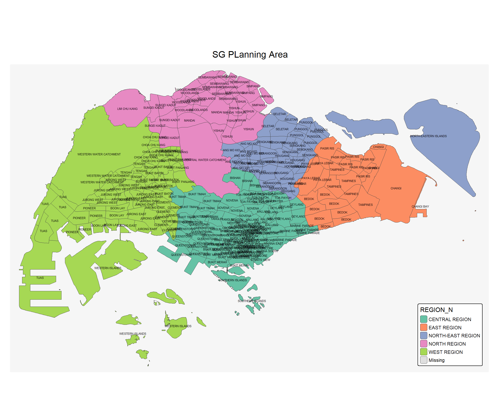
mppa_sf <- mppa %>%
filter (PLN_AREA_N != "CENTRAL WATER CATCHMENT",
PLN_AREA_N != "WESTERN WATER CATCHMENT",
PLN_AREA_N != "WESTERN ISLANDS",
PLN_AREA_N != "SOUTHERN ISLANDS",
PLN_AREA_N != "NORTH-EASTERN ISLANDS",
)Since our analysis is centered on business activities taking place on Singapore’s main island, we will exclude areas that are not relevant to commercial operations — such as the North-Eastern Islands, Western Islands, Southern Islands, as well as the Central and Western Water Catchments — to ensure that the results accurately reflect business-related spatial patterns. Plotting the Area again -
tm_shape(mppa_sf) +
tm_polygons(col ="REGION_N",
palette = "set2",
lwd = 0.5)+
tm_text("PLN_AREA_N", size=0.4,
auto.placement = TRUE,
remove.overlap = TRUE)+
tm_title("SG Planning Area - Business Activites",
position = tm_pos_out("center", "top", "center"))+
tm_legend(frame = FALSE,
position = c("right", "bottom"))+
tm_layout(frame = FALSE,
bg.color = "#f6f6f6")── tmap v3 code detected ───────────────────────────────────────────────────────[v3->v4] `tm_tm_polygons()`: migrate the argument(s) related to the scale of
the visual variable `fill` namely 'palette' (rename to 'values') to fill.scale
= tm_scale(<HERE>).
[v3->v4] `tm_text()`: migrate the layer options 'auto.placement' (rename to
'point.label') to 'options = opt_tm_text(<HERE>)'
Multiple palettes called "set2" found: "brewer.set2", "hcl.set2". The first one, "brewer.set2", is returned.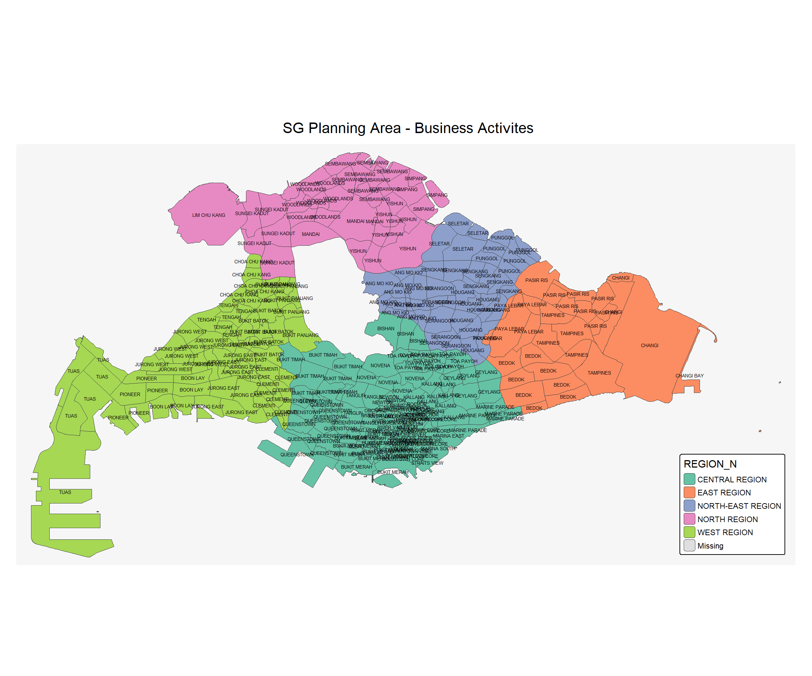
5.2 ACRA Data
We will utilize data from the Accounting and Corporate Regulatory Authority (ACRA) for our spatial analysis. This dataset consists of 27 files, categorized by the first letter of the company name (A–Z and “Others”), and contains comprehensive details on all businesses registered in Singapore, including company profiles, industry classifications, and registration information. As the files share a consistent naming convention and are stored in a single directory, we will employ map_dfr() to efficiently import and merge them into a unified dataset.
folder_path <- "data/ACRA"
file_list <- list.files(path = folder_path,
pattern = "^ACRA*.*\\.csv$",
full.names = TRUE)
acra <- file_list %>%
map_dfr(read_csv)acra <- read_rds("data/rds/acra_data.rds")5.3 Filtering SSIC Data
Extract selected data for three industries: Food and Beverages (SSIC 56111), Retail (SSIC 471), and Information Technology (SSIC 62011) from January to June 2025
FNB_56111 <- acra %>%
select(1,3,4,8:9,11,17,22) %>%
filter(grepl("56111", primary_ssic_code)) %>%
rename(date = registration_incorporation_date) %>%
mutate(date = as.Date(date),
Year = year(date),
Month_num = month(date,
label =TRUE,
abbr =TRUE)) %>%
# make sure the post_code are 6 digits
mutate(postal_code = str_pad(postal_code,
width =6,
side = "left",pad ="0")) %>%
filter(Year == 2025,
Month_num %in% c("Jan","Feb","Mar","Apr","May","Jun"))
retail_47111 <- acra %>%
select(1,3,4,8:9,11,17,22) %>%
filter(grepl("^471", primary_ssic_code)) %>%
rename(date = registration_incorporation_date) %>%
mutate(date = as.Date(date),
Year = year(date),
Month_num = month(date,
label =TRUE,
abbr =TRUE)) %>%
# make sure the post_code are 6 digits
mutate(postal_code = str_pad(postal_code,
width =6,
side = "left",pad ="0")) %>%
filter(Year == 2025,
Month_num %in% c("Jan","Feb","Mar","Apr","May","Jun"))
IT_62011 <- acra %>%
select(1,3,4,8:9,11,17,22) %>%
filter(grepl("62011", primary_ssic_code)) %>%
rename(date = registration_incorporation_date) %>%
mutate(date = as.Date(date),
Year = year(date),
Month_num = month(date,
label =TRUE,
abbr =TRUE)) %>%
# make sure the post_code are 6 digits
mutate(postal_code = str_pad(postal_code,
width =6,
side = "left",pad ="0")) %>%
filter(Year == 2025,
Month_num %in% c("Jan","Feb","Mar","Apr","May","Jun"))6 Geocoding for Coodinates
Unlike geospatial datasets that directly include latitude and longitude, the ACRA dataset only provides business locations in the form of postal codes and addresses. To convert these into usable spatial data, we need to perform geocoding, which is the process of translating text-based location information (like postal codes) into precise geographic coordinates (latitude and longitude).
For this project, we will use the OneMap API, Singapore’s official geospatial platform, to geocode each postal code. The API will return the corresponding coordinates, allowing us to plot business locations accurately on a map and perform spatial analyses such as clustering, density estimation, and proximity measurements. This step is essential because spatial operations require coordinate data, not just textual addresses.
Combining the data by row
combined_data <- rbind(FNB_56111,retail_47111,IT_62011)# Create folder if not exists
if (!dir.exists("data/rds")) dir.create("data/rds", recursive = TRUE)
# Create and save combined data if not already saved
if (file.exists("data/rds/combined_data.rds")) {
combined_data <- read_rds("data/rds/combined_data.rds")
} else {
combined_data <- rbind(FNB_56111, retail_47111, IT_62011)
write_rds(combined_data, "data/rds/combined_data.rds")
}Extract Unique postal codes from the above extracted data
postcodes <- unique(combined_data$postal_code)
length(postcodes)[1] 1280Our dataset contains 1,280 unique business locations. To map them accurately, we use the httr package to send GET requests to the OneMap API, which returns the latitude and longitude for each postal code. This enables us to convert text-based addresses into spatial data for further analysis.
url <- "https://onemap.gov.sg/api/common/elastic/search"
found <- data.frame()
not_found <- data.frame(postcode =character())
for(pc in postcodes) {
query <- list(
searchVal = pc,
returnGeom = "Y",
getAddrDetails = "Y",
pageNum ="1"
)
res <- GET(url, query=query)
json <- content(res)
if(json$found !=0) {
df <- as.data.frame(json$results, stringFactors =FALSE)
df$input_postcode <- pc
found <- bind_rows(found,df)
} else{
not_found <- bind_rows(not_found, data.frame(postcode=pc))
}
}write_rds(found,"data/rds/found.rds")
write_rds(not_found,"data/rds/not_found.rds")found <- read_rds("data/rds/found.rds")
not_found <- read_rds("data/rds/not_found.rds")Examining the mapping result
nrow(found)[1] 1280nrow(not_found)[1] 0The results above indicate we successfully retrieve all the coordinates.
7 Combine and Convert Data into sf Format
we merge the original ACRA dataset with the geocoded results containing the spatial coordinates using left_join(). This ensures that each business record now includes its corresponding longitude (X) and latitude (Y) obtained from the OneMap API. By joining the datasets in this way, we maintain all original records while appending the newly retrieved coordinate information.
Once the datasets are combined, we use the st_as_sf() function to convert the merged dataset into an sf (simple feature) object, which is the standard format for spatial data in R. By specifying the X and Y columns as coordinates, this conversion allows us to perform spatial operations, visualizations, and analyses, such as mapping business locations, calculating distances, and identifying spatial patterns, in a structured and efficient manner.
# Keep only the relevant columns from geocoded data
found_sel <- found %>%
select(POSTAL, LATITUDE, LONGITUDE)
# F&B
#FNB_sf <- FNB_56111 %>%
# left_join(found_sel %>% rename(X = LONGITUDE, Y = LATITUDE),
# by = c("postal_code" = "POSTAL")) %>%
# filter(!is.na(X) & !is.na(Y)) %>%
# st_as_sf(coords = c("X", "Y"), crs = 3414)
FNB_sf <- FNB_56111 %>%
left_join(found_sel, by = c("postal_code" = "POSTAL")) %>%
filter(!is.na(LATITUDE) & !is.na(LONGITUDE)) %>%
# First create with correct WGS84 CRS (4326)
st_as_sf(coords = c("LONGITUDE", "LATITUDE"), crs = 4326) %>%
# Then transform to match your boundary
st_transform(st_crs(mppa_sf))
# Retail
#retail_sf <- retail_47111 %>%
# left_join(found_sel %>% rename(X = LONGITUDE, Y = LATITUDE),
# by = c("postal_code" = "POSTAL")) %>%
# filter(!is.na(X) & !is.na(Y)) %>%
# st_as_sf(coords = c("X", "Y"), crs = 3414)
retail_sf <- retail_47111 %>%
left_join(found_sel, by = c("postal_code" = "POSTAL")) %>%
filter(!is.na(LATITUDE) & !is.na(LONGITUDE)) %>%
# First create with correct WGS84 CRS (4326)
st_as_sf(coords = c("LONGITUDE", "LATITUDE"), crs = 4326) %>%
# Then transform to match your boundary
st_transform(st_crs(mppa_sf))
# IT
#IT_sf <- IT_62011 %>%
# left_join(found_sel %>% rename(X = LONGITUDE, Y = LATITUDE),
# by = c("postal_code" = "POSTAL")) %>%
# filter(!is.na(X) & !is.na(Y)) %>%
# st_as_sf(coords = c("X", "Y"), crs = 3414)
IT_sf <- IT_62011 %>%
left_join(found_sel, by = c("postal_code" = "POSTAL")) %>%
filter(!is.na(LATITUDE) & !is.na(LONGITUDE)) %>%
# First create with correct WGS84 CRS (4326)
st_as_sf(coords = c("LONGITUDE", "LATITUDE"), crs = 4326) %>%
# Then transform to match your boundary
st_transform(st_crs(mppa_sf))The code saves the spatial datasets for F&B, retail, and IT businesses as RDS files for future use, then resolves a coordinate projection issue by transforming all three datasets to match the CRS of the study area (mppa_sf). After the transformation, a quick verification confirms the number of points in each dataset and ensures that the retail points correctly fall within the study area boundary using st_intersection(). This process ensures all spatial data are accurately aligned for subsequent analysis
write_rds(FNB_sf,"data/rds/FNB_sf.rds")
write_rds(retail_sf,"data/rds/retail_sf.rds")
write_rds(IT_sf,"data/rds/IT_sf.rds")
# Fix coordinate projection issue
FNB_sf <- st_transform(FNB_sf, st_crs(mppa_sf))
retail_sf <- st_transform(retail_sf, st_crs(mppa_sf))
IT_sf <- st_transform(IT_sf, st_crs(mppa_sf))
# Quick verification
cat("=== Coordinate Verification ===\n")=== Coordinate Verification ===cat("FNB points in study area:", nrow(FNB_sf), "\n")FNB points in study area: 596 cat("Retail points in study area:", nrow(retail_sf), "\n") Retail points in study area: 457 cat("IT points in study area:", nrow(IT_sf), "\n")IT points in study area: 1597 # Check if points are now properly projected
test_intersection <- st_intersection(retail_sf, mppa_sf)Warning: attribute variables are assumed to be spatially constant throughout
all geometriescat("Retail points inside boundary after fix:", nrow(test_intersection), "\n")Retail points inside boundary after fix: 457 FNB_sf <- read_rds("data/rds/FNB_sf.rds")
retail_sf <- read_rds("data/rds/retail_sf.rds")
IT_sf <- read_rds("data/rds/IT_sf.rds")8 Mapping Geospatial Data
Plotting the map and examining the distribution of the three industries:
nrow(FNB_sf)[1] 596nrow(retail_sf)[1] 457nrow(IT_sf)[1] 1597st_geometry(FNB_sf)Geometry set for 596 features
Geometry type: POINT
Dimension: XY
Bounding box: xmin: 7514.986 ymin: 26622.47 xmax: 46829.34 ymax: 49432.98
Projected CRS: SVY21 / Singapore TM
First 5 geometries:POINT (34007.42 41217.84)POINT (30569.32 31216.93)POINT (30900.42 33108.58)POINT (37390.83 34553.95)POINT (27549.59 46589.95)st_geometry(retail_sf)Geometry set for 457 features
Geometry type: POINT
Dimension: XY
Bounding box: xmin: 4670.11 ymin: 27393.65 xmax: 45154.27 ymax: 49401.78
Projected CRS: SVY21 / Singapore TM
First 5 geometries:POINT (32829.61 36781.03)POINT (27808.56 45289.08)POINT (28071.64 31871.17)POINT (36343.66 41287.07)POINT (22308.9 35972.96)st_geometry(IT_sf)Geometry set for 1597 features
Geometry type: POINT
Dimension: XY
Bounding box: xmin: 11775.35 ymin: 24744.89 xmax: 43955.12 ymax: 49327.11
Projected CRS: SVY21 / Singapore TM
First 5 geometries:POINT (29975.87 29642.37)POINT (29391.73 29747.36)POINT (29924.68 30512.73)POINT (29617.75 28954.42)POINT (29724.79 29082.07)8.1 Combined Plot of the Three Industries’ Distribution
tm_shape(mppa_sf) +
tm_polygons(col ="REGION_N",
border.col = "white",
palette = "set2",
lwd = 0.5)+
tm_shape(retail_sf) +
tm_dots(fill = "red", size = 0.5, shape = 17)+
tm_shape(FNB_sf) +
tm_dots(fill = "blue", size = 0.5, shape = 16)+
tm_shape(IT_sf) +
tm_dots(fill = "black", size = 0.5, shape = 18)+
tm_title("Activity Distribution: H1 2025",
position = tm_pos_out("center", "top", "center"))+
tm_legend(frame = FALSE,
position = c("right", "bottom"))+
tm_layout(frame = FALSE,
bg.color = "#f6f6f6")── tmap v3 code detected ───────────────────────────────────────────────────────[v3->v4] `tm_tm_polygons()`: migrate the argument(s) related to the scale of
the visual variable `fill` namely 'palette' (rename to 'values') to fill.scale
= tm_scale(<HERE>).
Multiple palettes called "set2" found: "brewer.set2", "hcl.set2". The first one, "brewer.set2", is returned.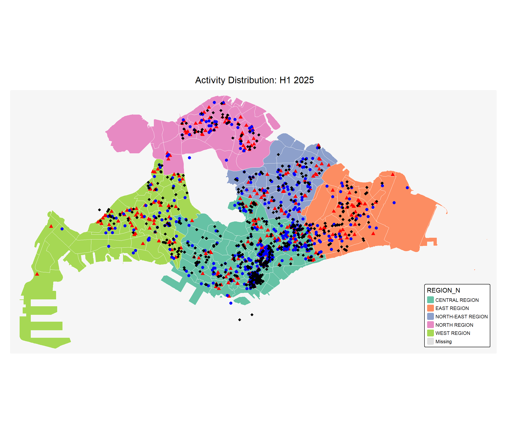
st_crs(mppa_sf)Coordinate Reference System:
User input: EPSG:3414
wkt:
PROJCRS["SVY21 / Singapore TM",
BASEGEOGCRS["SVY21",
DATUM["SVY21",
ELLIPSOID["WGS 84",6378137,298.257223563,
LENGTHUNIT["metre",1]]],
PRIMEM["Greenwich",0,
ANGLEUNIT["degree",0.0174532925199433]],
ID["EPSG",4757]],
CONVERSION["Singapore Transverse Mercator",
METHOD["Transverse Mercator",
ID["EPSG",9807]],
PARAMETER["Latitude of natural origin",1.36666666666667,
ANGLEUNIT["degree",0.0174532925199433],
ID["EPSG",8801]],
PARAMETER["Longitude of natural origin",103.833333333333,
ANGLEUNIT["degree",0.0174532925199433],
ID["EPSG",8802]],
PARAMETER["Scale factor at natural origin",1,
SCALEUNIT["unity",1],
ID["EPSG",8805]],
PARAMETER["False easting",28001.642,
LENGTHUNIT["metre",1],
ID["EPSG",8806]],
PARAMETER["False northing",38744.572,
LENGTHUNIT["metre",1],
ID["EPSG",8807]]],
CS[Cartesian,2],
AXIS["northing (N)",north,
ORDER[1],
LENGTHUNIT["metre",1]],
AXIS["easting (E)",east,
ORDER[2],
LENGTHUNIT["metre",1]],
USAGE[
SCOPE["Cadastre, engineering survey, topographic mapping."],
AREA["Singapore - onshore and offshore."],
BBOX[1.13,103.59,1.47,104.07]],
ID["EPSG",3414]]st_crs(FNB_sf)Coordinate Reference System:
User input: EPSG:3414
wkt:
PROJCRS["SVY21 / Singapore TM",
BASEGEOGCRS["SVY21",
DATUM["SVY21",
ELLIPSOID["WGS 84",6378137,298.257223563,
LENGTHUNIT["metre",1]]],
PRIMEM["Greenwich",0,
ANGLEUNIT["degree",0.0174532925199433]],
ID["EPSG",4757]],
CONVERSION["Singapore Transverse Mercator",
METHOD["Transverse Mercator",
ID["EPSG",9807]],
PARAMETER["Latitude of natural origin",1.36666666666667,
ANGLEUNIT["degree",0.0174532925199433],
ID["EPSG",8801]],
PARAMETER["Longitude of natural origin",103.833333333333,
ANGLEUNIT["degree",0.0174532925199433],
ID["EPSG",8802]],
PARAMETER["Scale factor at natural origin",1,
SCALEUNIT["unity",1],
ID["EPSG",8805]],
PARAMETER["False easting",28001.642,
LENGTHUNIT["metre",1],
ID["EPSG",8806]],
PARAMETER["False northing",38744.572,
LENGTHUNIT["metre",1],
ID["EPSG",8807]]],
CS[Cartesian,2],
AXIS["northing (N)",north,
ORDER[1],
LENGTHUNIT["metre",1]],
AXIS["easting (E)",east,
ORDER[2],
LENGTHUNIT["metre",1]],
USAGE[
SCOPE["Cadastre, engineering survey, topographic mapping."],
AREA["Singapore - onshore and offshore."],
BBOX[1.13,103.59,1.47,104.07]],
ID["EPSG",3414]]st_crs(retail_sf)Coordinate Reference System:
User input: EPSG:3414
wkt:
PROJCRS["SVY21 / Singapore TM",
BASEGEOGCRS["SVY21",
DATUM["SVY21",
ELLIPSOID["WGS 84",6378137,298.257223563,
LENGTHUNIT["metre",1]]],
PRIMEM["Greenwich",0,
ANGLEUNIT["degree",0.0174532925199433]],
ID["EPSG",4757]],
CONVERSION["Singapore Transverse Mercator",
METHOD["Transverse Mercator",
ID["EPSG",9807]],
PARAMETER["Latitude of natural origin",1.36666666666667,
ANGLEUNIT["degree",0.0174532925199433],
ID["EPSG",8801]],
PARAMETER["Longitude of natural origin",103.833333333333,
ANGLEUNIT["degree",0.0174532925199433],
ID["EPSG",8802]],
PARAMETER["Scale factor at natural origin",1,
SCALEUNIT["unity",1],
ID["EPSG",8805]],
PARAMETER["False easting",28001.642,
LENGTHUNIT["metre",1],
ID["EPSG",8806]],
PARAMETER["False northing",38744.572,
LENGTHUNIT["metre",1],
ID["EPSG",8807]]],
CS[Cartesian,2],
AXIS["northing (N)",north,
ORDER[1],
LENGTHUNIT["metre",1]],
AXIS["easting (E)",east,
ORDER[2],
LENGTHUNIT["metre",1]],
USAGE[
SCOPE["Cadastre, engineering survey, topographic mapping."],
AREA["Singapore - onshore and offshore."],
BBOX[1.13,103.59,1.47,104.07]],
ID["EPSG",3414]]st_crs(IT_sf)Coordinate Reference System:
User input: EPSG:3414
wkt:
PROJCRS["SVY21 / Singapore TM",
BASEGEOGCRS["SVY21",
DATUM["SVY21",
ELLIPSOID["WGS 84",6378137,298.257223563,
LENGTHUNIT["metre",1]]],
PRIMEM["Greenwich",0,
ANGLEUNIT["degree",0.0174532925199433]],
ID["EPSG",4757]],
CONVERSION["Singapore Transverse Mercator",
METHOD["Transverse Mercator",
ID["EPSG",9807]],
PARAMETER["Latitude of natural origin",1.36666666666667,
ANGLEUNIT["degree",0.0174532925199433],
ID["EPSG",8801]],
PARAMETER["Longitude of natural origin",103.833333333333,
ANGLEUNIT["degree",0.0174532925199433],
ID["EPSG",8802]],
PARAMETER["Scale factor at natural origin",1,
SCALEUNIT["unity",1],
ID["EPSG",8805]],
PARAMETER["False easting",28001.642,
LENGTHUNIT["metre",1],
ID["EPSG",8806]],
PARAMETER["False northing",38744.572,
LENGTHUNIT["metre",1],
ID["EPSG",8807]]],
CS[Cartesian,2],
AXIS["northing (N)",north,
ORDER[1],
LENGTHUNIT["metre",1]],
AXIS["easting (E)",east,
ORDER[2],
LENGTHUNIT["metre",1]],
USAGE[
SCOPE["Cadastre, engineering survey, topographic mapping."],
AREA["Singapore - onshore and offshore."],
BBOX[1.13,103.59,1.47,104.07]],
ID["EPSG",3414]]9 Geospatial Data wrangling
The spatstat package requires specialized data structures—ppp for planar point patterns and owin for observation windows—we must convert our sf (Simple Features) objects into corresponding ppp and owin formats.
9.1 Converting sf dfs to ppp class
The following code leverages as.ppp() from the spatstat package to transform data from sf format into the ppp (planar point pattern) format. To handle cases where multiple points have identical coordinates—such as businesses sharing the same postal code—rjitter() is applied to slightly offset the points and eliminate duplicates.
FNB_ppp <- as.ppp(FNB_sf)%>%
rjitter(retry = TRUE,
nsim = 1,
drop = TRUE)
IT_ppp <- as.ppp(IT_sf)%>%
rjitter(retry = TRUE,
nsim = 1,
drop = TRUE)
retail_ppp <- as.ppp(retail_sf)%>%
rjitter(retry = TRUE,
nsim = 1,
drop = TRUE)9.2 Creating owin object
In spatstat, an owin object is used to represent a polygonal study region. It defines the spatial boundaries within which point pattern analysis is performed. By converting the study area into an owin object, we ensure that all spatial computations are restricted to the correct geographic extent.
sg_owin <- as.owin(mppa_sf)The study area look like this
par(bg = "#f6f6f6")
plot(sg_owin)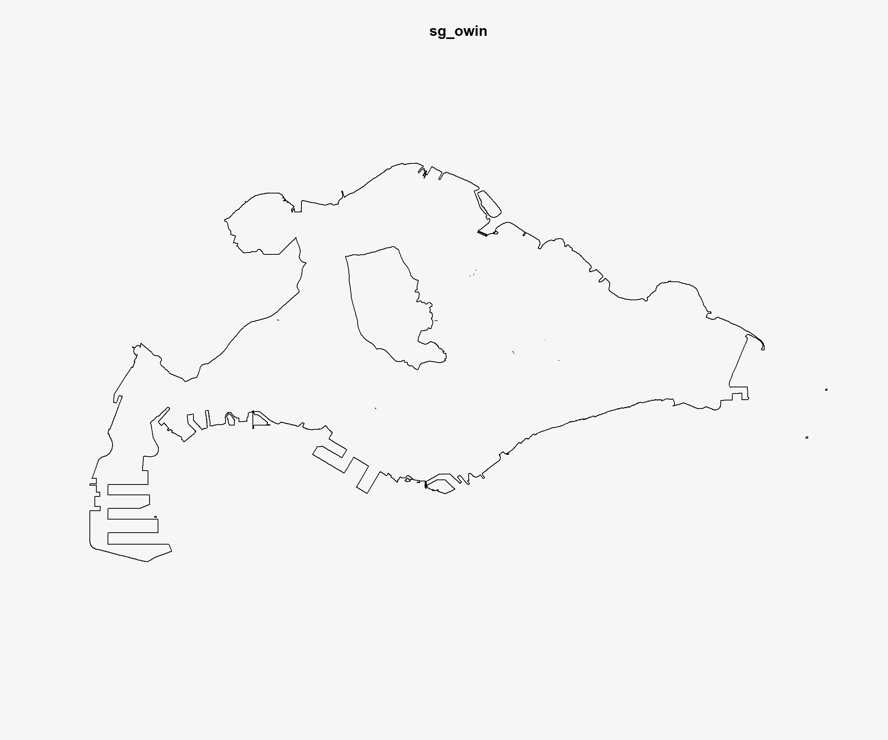
9.3 Combining point events object and owin object
The code below combine ppp and owin objects
FNBSG_ppp <- FNB_ppp[sg_owin]
retailSG_ppp <- retail_ppp[sg_owin]
ITSG_ppp <- IT_ppp[sg_owin]Examine the output for three ppp objects:
A point is dropped outside the study area
FNBSG_pppMarked planar point pattern: 594 points
Mark variables:
uen entity_name entity_type_description entity_status_description date
address_type postal_code primary_ssic_code Year Month_num
window: polygonal boundary
enclosing rectangle: [2667.54, 55941.94] x [21448.47, 50256.33] unitsAll points are within the study area
retailSG_pppMarked planar point pattern: 457 points
Mark variables:
uen entity_name entity_type_description entity_status_description date
address_type postal_code primary_ssic_code Year Month_num
window: polygonal boundary
enclosing rectangle: [2667.54, 55941.94] x [21448.47, 50256.33] unitsA point is dropped outside the study area
ITSG_pppMarked planar point pattern: 1594 points
Mark variables:
uen entity_name entity_type_description entity_status_description date
address_type postal_code primary_ssic_code Year Month_num
window: polygonal boundary
enclosing rectangle: [2667.54, 55941.94] x [21448.47, 50256.33] units10 Spatial Point Pattern Analysis
10.1 Food and Beverages
To analyze the spatial distribution of F&B outlets, we start with the Clark-Evans test and Kernel Density Estimation (KDE) to identify overall clustering tendencies. These first-order analyses provide a general view of how outlets are distributed across the study area. We then apply second-order spatial point pattern analysis to examine clustering at both local and global scales, revealing more detailed patterns in F&B location strategies.
10.1.1 First-Order SPPA
Clark-Evan Test
Since we have 594 points, we will use the Monte Carlo method for robustness.
The hypothesis and alpha value are as follows:
Null and Alternative Hypotheses:
- H0 = The distribution of FNB businesses are randomly distributed (R=1)
- H1 = The distribution of FNB businesses are clustered (R<1)
Significance Level: A 95% confidence level will be used (α = 0.05)
set.seed(1234)
clarkevans.test(FNBSG_ppp,
correction = "none",
clipregion = "sg_owin",
alternative = "clustered",
method = "MonteCarlo",
nsim=99)
Clark-Evans test
No edge correction
Monte Carlo test based on 99 simulations of CSR with fixed n
data: FNBSG_ppp
R = 0.54567, p-value = 0.01
alternative hypothesis: clustered (R < 1)The Clark-Evans test evaluates whether the spatial distribution of points—in this case, F&B outlets—is random, clustered, or regularly spaced. Here, the test was run using the Monte Carlo method with 99 simulations, no edge correction, and a 95% confidence level (α = 0.05).
R = 0.5457: The Clark-Evans R value is less than 1, which indicates that the points are more clustered than would be expected under complete spatial randomness.
p-value = 0.01: Since the p-value is below 0.05, we reject the null hypothesis (H0) of random distribution in favor of the alternative hypothesis (H1) that the F&B businesses are clustered.
Conclusion: The analysis shows that F&B outlets in Singapore are not randomly distributed but tend to cluster in certain areas. This suggests that businesses strategically choose locations near existing F&B clusters, likely to capitalize on high customer traffic, accessibility, and complementary services.FNB establishments may tend to locate near one another, possibly due to shared preferences for high-footfall areas and commercial zones. :::
Kernel Density Estimation
After confirming the clustered pattern, let us apply the KDE method to visualize hotspots with high intensity.
FNBSG_ppp_km <- rescale.ppp(FNBSG_ppp, 1000, "km")
kde_FNBSG_km_ppl <- density(FNBSG_ppp_km,
sigma = bw.ppl,
edge = TRUE,
kernel = "gaussian")
kde_FNBSG_km_dg <- density(FNBSG_ppp_km,
sigma = bw.diggle,
edge = TRUE,
kernel = "gaussian")
kde_FNBSG_km_ad <- adaptive.density(FNBSG_ppp_km,
method="kernel")par(bg="#f6f6f6", mfrow = c(2,2))
plot(kde_FNBSG_km_dg, main = "bw.diggle")
plot(kde_FNBSG_km_ppl, main = "bw.ppl")
plot(kde_FNBSG_km_ad, main = "bw.adaptive")
# Convert ppp to data frame and plot
FNBSG_points <- as.data.frame(FNBSG_ppp_km)
plot(FNBSG_points$x, FNBSG_points$y, main = "Original Points",
cex = 0.5, pch = 16, xlab = "x", ylab = "y")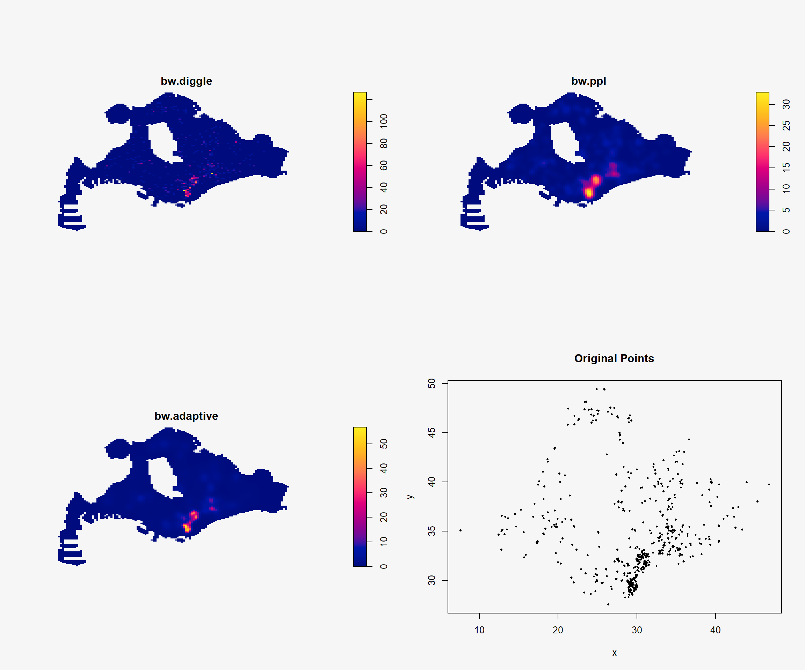
Note
The KDE plots show high-density points in central regions like Downtown Core, Orchard, and Marina Bay. There are also secondary clusters in regional centers like Tampines and Jurong East.
10.1.2 First Order SPPA at Planning Area
Geospartial Data Wrangling
We first extract the study areas with high FNB concentration where The code first identifies the top three planning areas with the highest density of F&B businesses using st_join() and count(). It then extracts the corresponding spatial polygons for Downtown Core, Outram, and Geylang, and converts them into owin objects to define the study windows. F&B points within each planning area are subsetted from the main ppp object, and the points are rescaled from meters to kilometers for spatial analysis. Finally, the Clark-Evans test is applied separately to each area using Monte Carlo simulations to test whether F&B outlets are randomly distributed or clustered within the planning areas.
# Identify planning areas with highest FNB density
fnb_by_area <- FNB_sf %>%
st_join(mppa_sf) %>%
st_drop_geometry() %>%
count(PLN_AREA_N, sort = TRUE) %>%
head(3)
top_areas <- fnb_by_area$PLN_AREA_N
cat("Top 3 planning areas for FNB businesses:", paste(top_areas, collapse = ", "), "\n")Top 3 planning areas for FNB businesses: GEYLANG, DOWNTOWN CORE, OUTRAM # Extract these areas
DC <- mppa_sf %>% filter(PLN_AREA_N == "DOWNTOWN CORE")
OR <- mppa_sf %>% filter(PLN_AREA_N == "OUTRAM")
TP <- mppa_sf %>% filter(PLN_AREA_N == "GEYLANG")DC_owin = as.owin(DC)
OR_owin = as.owin(OR)
TP_owin = as.owin(TP)FNB_DC_ppp = FNB_ppp[DC_owin]
FNB_OR_ppp = FNB_ppp[OR_owin]
FNB_TP_ppp = FNB_ppp[TP_owin]Rescale ppp objects:
FNB_DC_ppp_km = rescale.ppp(FNB_DC_ppp, 1000, "km")
FNB_OR_ppp_km = rescale.ppp(FNB_OR_ppp, 1000, "km")
FNB_TP_ppp_km = rescale.ppp(FNB_TP_ppp, 1000, "km")Clark-Evan Test by Planning Area
Null and Alternative Hypotheses:
H0 = The distribution of FNB businesses are randomly distributed (R=1)
H1 = The distribution of FNB businesses are clustered (R<1)
Significance Level: A 95% confidence level will be used (α = 0.05)
Note
For all three areas, the Clark-Evans R values are less than 1 (Downtown Core: 0.457, Outram: 0.754, Geylang: 0.804) with p-values of 0.01, indicating statistically significant clustering. This means F&B outlets in each of these top planning areas are not randomly distributed but tend to cluster together. The strongest clustering is observed in the Downtown Core, suggesting a high concentration of outlets, likely due to commercial activity and foot traffic, while clustering in Outram and Geylang is present but less pronounced.
Kernel Density Estimation by Planning Area
par(bg="#f6f6f6", mfrow=c(2,2))
plot(density(FNB_DC_ppp_km,
title="A",
sigma=bw.diggle,
edge=TRUE,
kernel="gaussian"),
main="Downtown Core")
plot(density(FNB_OR_ppp_km,
sigma=bw.diggle,
edge=TRUE,
kernel="gaussian"),
main="Outram")
plot(density(FNB_TP_ppp_km,
sigma=bw.diggle,
edge=TRUE,
kernel="gaussian"),
main="Geylang")
# Combine all point patterns and plot using spatstat method
FNB_all_ppp_km <- superimpose(FNB_DC_ppp_km, FNB_OR_ppp_km, FNB_TP_ppp_km)
spatstat.geom::plot.ppp(FNB_all_ppp_km, main="All FNB Points", cex=0.3, size=0.1)Warning in default.charmap(ntypes, chars): Too many types to display every type
as a different character
Warning in default.charmap(ntypes, chars): Too many types to display every type
as a different character
Warning in default.charmap(ntypes, chars): Too many types to display every type
as a different character
Warning in default.charmap(ntypes, chars): Too many types to display every type
as a different character
Warning in default.charmap(ntypes, chars): Too many types to display every type
as a different character
Warning in default.charmap(ntypes, chars): Too many types to display every type
as a different character
Warning in default.charmap(ntypes, chars): Too many types to display every type
as a different characterWarning: Only 10 out of 169 symbols are shown in the symbol mapWarning in default.charmap(ntypes, chars): Too many types to display every type
as a different characterWarning: Only 10 out of 169 symbols are shown in the symbol mapWarning in default.charmap(ntypes, chars): Too many types to display every type
as a different characterWarning: Only 10 out of 101 symbols are shown in the symbol mapWarning: Only 10 out of 12 symbols are shown in the symbol map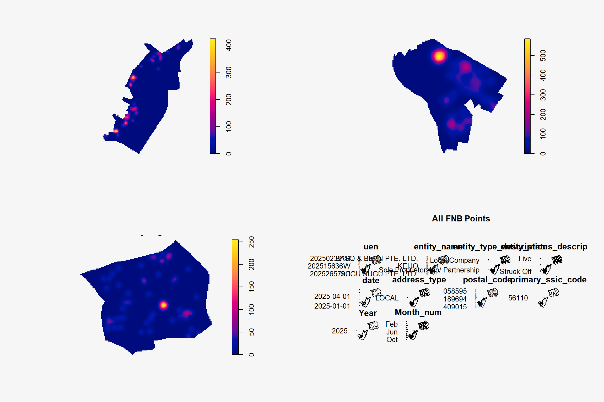
The KDE plots reveal distinct clustering patterns: Downtown Core shows multiple intense hotspots followed by Geylang and then Outram displays a more distributed.
10.1.3 Second-Order SPPA at the Planning Area Level
Downtown Core Planning Area
Compute G-function estimation
G_DC = Gest(FNB_DC_ppp, correction = "border")
par(bg = "#f6f6f6")
plot(G_DC, xlim=c(0,500), main="G-function: Downtown Core FNB")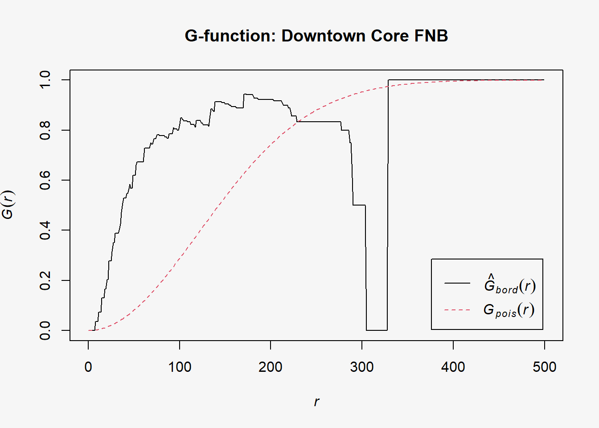
Perform CSR Test with G-function
Null and Alternative Hypotheses:
- H0 = The nearest neighbor distances of FNB businesses in Downtown Core are randomly distributed.
- H1 = The nearest neighbor distances of FNB businesses in Downtown Core are not randomly distributed
Significance Level: A 95% confidence level will be used
set.seed(1234)
G_DC.csr <- envelope(FNB_DC_ppp, Gest, rank=1, nsim = 99)Generating 99 simulations of CSR ...
1, 2, 3, 4, 5, 6, 7, 8, 9, 10, 11, 12, 13, 14, 15, 16, 17, 18, 19, 20,
21, 22, 23, 24, 25, 26, 27, 28, 29, 30, 31, 32, 33, 34, 35, 36, 37, 38, 39, 40,
41, 42, 43, 44, 45, 46, 47, 48, 49, 50, 51, 52, 53, 54, 55, 56, 57, 58, 59, 60,
61, 62, 63, 64, 65, 66, 67, 68, 69, 70, 71, 72, 73, 74, 75, 76, 77, 78, 79, 80,
81, 82, 83, 84, 85, 86, 87, 88, 89, 90, 91, 92, 93, 94, 95, 96, 97, 98,
99.
Done.par(bg = "#f6f6f6")
plot(G_DC.csr, main="G-function CSR Test: Downtown Core")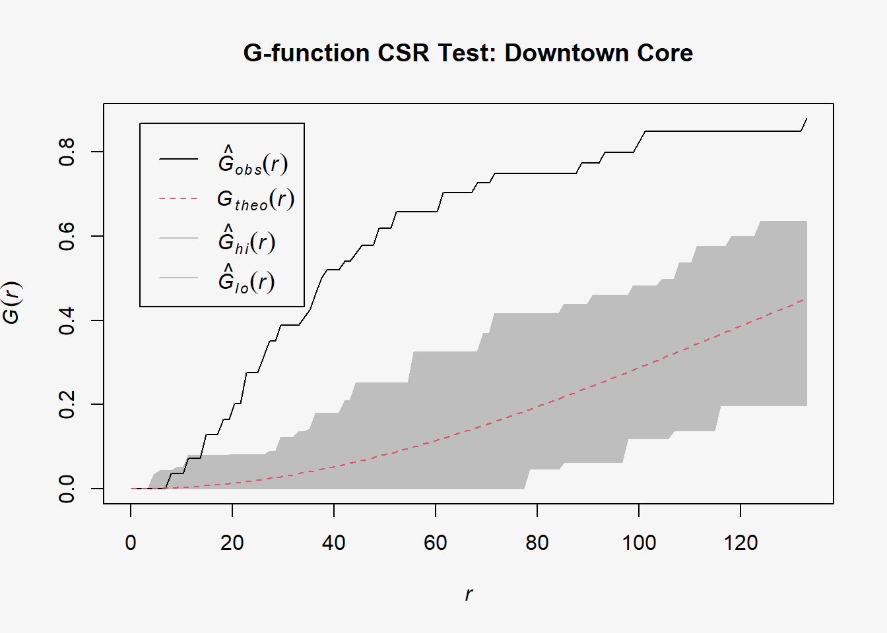
Note
Statistical Conclusion
The spatial distribution of food and beverage outlets in Singapore’s Downtown Core significantly deviates from what would be expected under Complete Spatial Randomness (CSR). This is evident as the observed G-function consistently lies above both the theoretical CSR curve and the simulation envelope, which represents the expected range of variation under random placement. This upward deviation indicates statistically significant clustering, meaning outlets are located closer to one another than a random distribution would suggest. Such clustering is likely influenced by strategic urban planning, concentrated commercial demand, and high pedestrian traffic—factors typical of dense city centers that encourage co-location and competitive proximity.
Compute L-function estimation
L_DC = Lest(FNB_DC_ppp, correction = "Ripley")
par(bg = "#f6f6f6")
plot(L_DC, . -r ~ r, ylab= "L(d)-r", xlab = "d(m)", main="L-function: Downtown Core")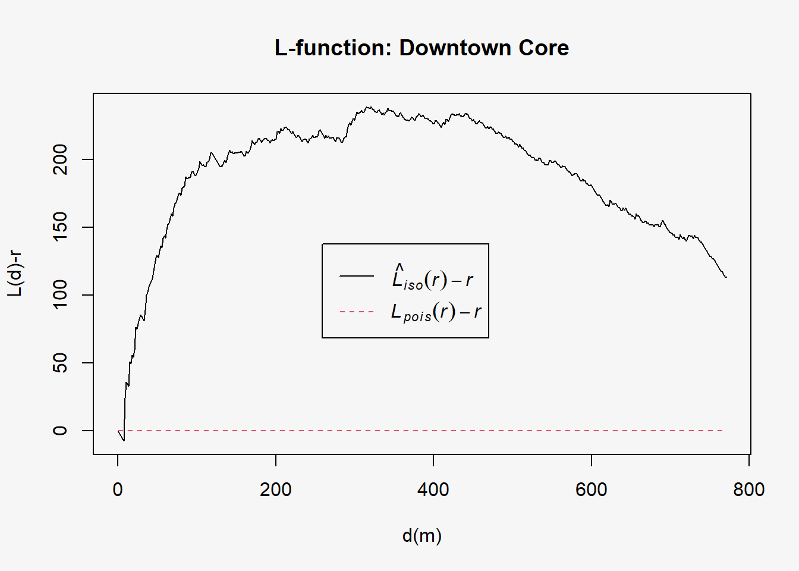
Perform CSR Test with L-function Null and Alternative Hypotheses:
- H0 = The distribution of FNB businesses in Downtown Core are randomly distributed.
- H1 = The distribution of FNB businesses in Downtown Core are not randomly distributed
Significance Level: A 95% confidence level will be used
set.seed(1234)
L_DC.csr <- envelope(FNB_DC_ppp, Lest, nsim = 99, rank = 1, glocal=TRUE)Generating 99 simulations of CSR ...
1, 2, 3, 4, 5, 6, 7, 8, 9, 10, 11, 12, 13, 14, 15, 16, 17, 18, 19, 20,
21, 22, 23, 24, 25, 26, 27, 28, 29, 30, 31, 32, 33, 34, 35, 36, 37, 38, 39, 40,
41, 42, 43, 44, 45, 46, 47, 48, 49, 50, 51, 52, 53, 54, 55, 56, 57, 58, 59, 60,
61, 62, 63, 64, 65, 66, 67, 68, 69, 70, 71, 72, 73, 74, 75, 76, 77, 78, 79, 80,
81, 82, 83, 84, 85, 86, 87, 88, 89, 90, 91, 92, 93, 94, 95, 96, 97, 98,
99.
Done.par(bg = "#f6f6f6")
plot(L_DC.csr, . - r ~ r, xlab="d", ylab="L(d)-r", main="L-function CSR Test: Downtown Core")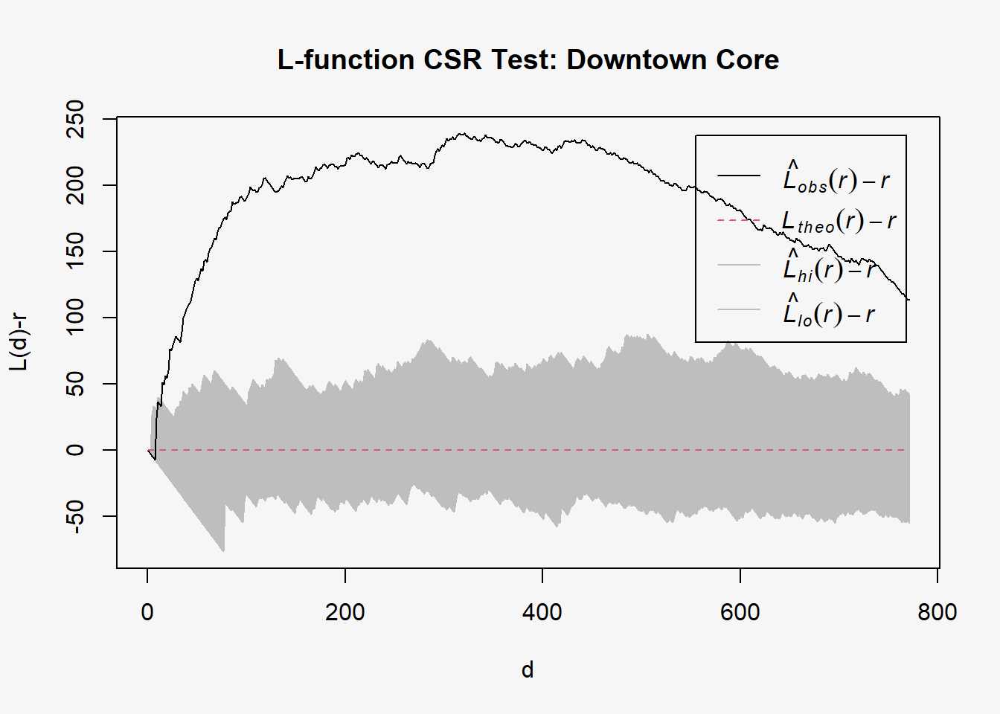
The spatial pattern of outlets shows significant clustering, as the observed distribution consistently exceeds the bounds of what would be expected under complete spatial randomness. This suggests that businesses are strategically concentrated, likely influenced by commercial zoning, pedestrian traffic, and competitive proximity in the urban core.
Geylang Planning Area
Compute G-function estimation
G_TP = Gest(FNB_TP_ppp, correction = "border")
par(bg = "#f6f6f6")
plot(G_TP, xlim=c(0,500), main="G-function: Geylang FNB")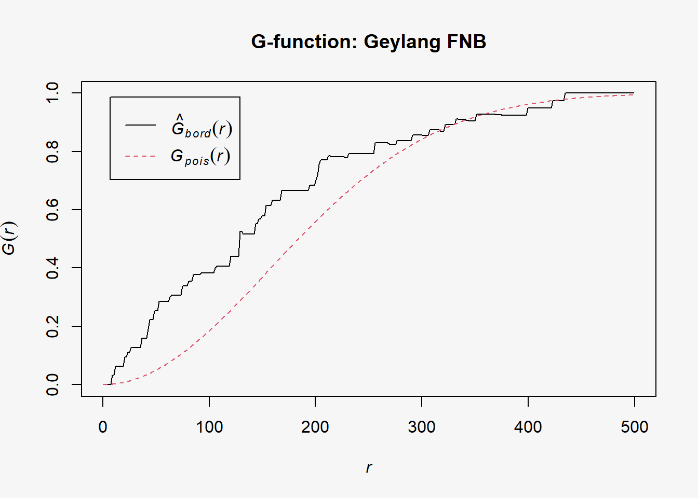
Perform CSR Test with G-function
set.seed(1234)
G_TP.csr <- envelope(FNB_TP_ppp, Gest, rank=1, nsim = 99)Generating 99 simulations of CSR ...
1, 2, 3, 4, 5, 6, 7, 8, 9, 10, 11, 12, 13, 14, 15, 16, 17, 18, 19, 20,
21, 22, 23, 24, 25, 26, 27, 28, 29, 30, 31, 32, 33, 34, 35, 36, 37, 38, 39, 40,
41, 42, 43, 44, 45, 46, 47, 48, 49, 50, 51, 52, 53, 54, 55, 56, 57, 58, 59, 60,
61, 62, 63, 64, 65, 66, 67, 68, 69, 70, 71, 72, 73, 74, 75, 76, 77, 78, 79, 80,
81, 82, 83, 84, 85, 86, 87, 88, 89, 90, 91, 92, 93, 94, 95, 96, 97, 98,
99.
Done.par(bg = "#f6f6f6")
plot(G_TP.csr, main="G-function CSR Test: Geylang")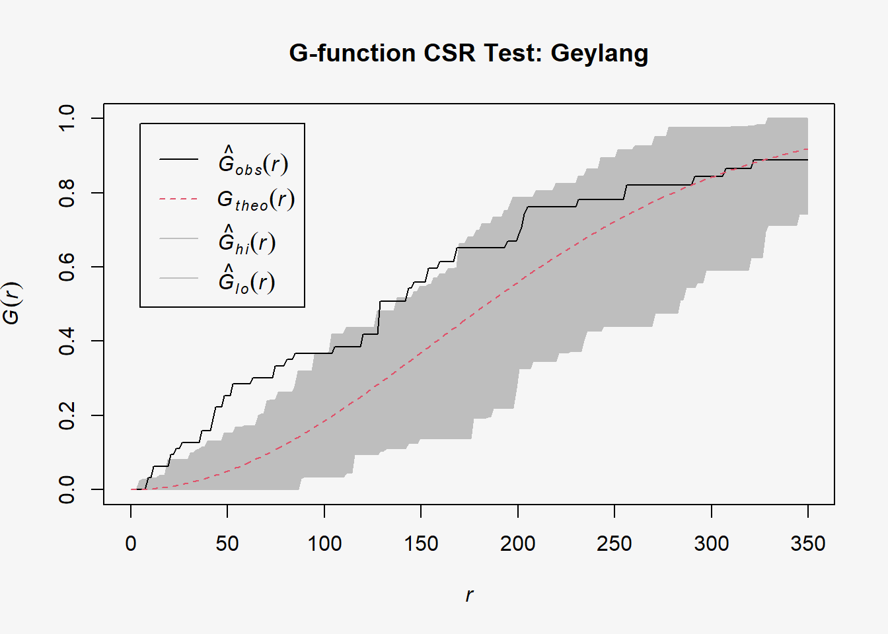
Compute L-function estimation
L_TP = Lest(FNB_TP_ppp, correction = "Ripley")
par(bg = "#f6f6f6")
plot(L_TP, . -r ~ r, ylab= "L(d)-r", xlab = "d(m)", main="L-function: Geylang")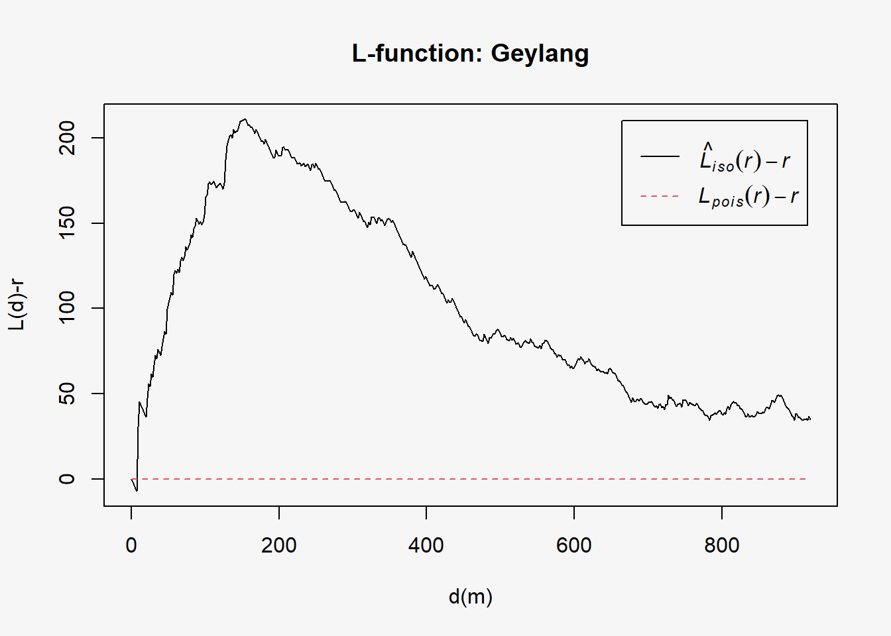
Perform CSR Test with L-function
set.seed(1234)
L_TP.csr <- envelope(FNB_TP_ppp, Lest, nsim = 99, rank = 1, glocal=TRUE)Generating 99 simulations of CSR ...
1, 2, 3, 4, 5, 6, 7, 8, 9, 10, 11, 12, 13, 14, 15, 16, 17, 18, 19, 20,
21, 22, 23, 24, 25, 26, 27, 28, 29, 30, 31, 32, 33, 34, 35, 36, 37, 38, 39, 40,
41, 42, 43, 44, 45, 46, 47, 48, 49, 50, 51, 52, 53, 54, 55, 56, 57, 58, 59, 60,
61, 62, 63, 64, 65, 66, 67, 68, 69, 70, 71, 72, 73, 74, 75, 76, 77, 78, 79, 80,
81, 82, 83, 84, 85, 86, 87, 88, 89, 90, 91, 92, 93, 94, 95, 96, 97, 98,
99.
Done.par(bg = "#f6f6f6")
plot(L_TP.csr, . - r ~ r, xlab="d", ylab="L(d)-r", main="L-function CSR Test: Geylang")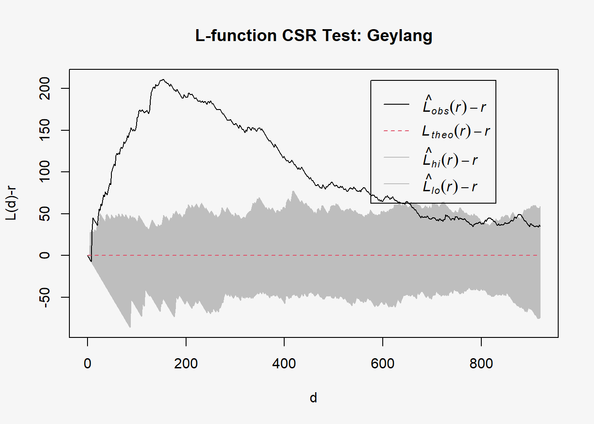
Note
The spatial pattern of outlets in Geylang exhibits significant clustering, as the observed distribution consistently exceeds the expected range under complete spatial randomness. This suggests that businesses are intentionally concentrated, likely influenced by local planning policies, consumer behavior, and shared infrastructure—factors that promote proximity and commercial synergy in suburban retail environments
10.1.4 Findings
The spatial analysis reveals that Food and Beverage (FNB) businesses in Singapore exhibit strong clustering patterns at multiple scales:
Global Level: There is clear evidence of significant clustering across Singapore, indicating that FNB outlets are not randomly distributed but tend to concentrate in commercially active zones.
Regional Level: All three major planning areas show distinct clustering characteristics:
Downtown Core: Displays intensive micro-clustering, especially in the Central Business District, where outlets are tightly packed within short distances—likely driven by high pedestrian volumes and dense commercial zoning.
Outram: Shows distributed clustering along major shopping belts, suggesting a linear agglomeration pattern aligned with retail corridors and tourist footfall.
Geylang: Exhibits a single dominant cluster centered around the regional hub, reflecting suburban planning that concentrates amenities in one core location.
Spatial Scales: Clustering is most pronounced at distances of 50–200 meters, highlighting that FNB businesses tend to agglomerate within walking distance. This proximity likely enhances visibility, shared customer traffic, and access to complementary services such as transport, retail, and entertainment.
Strategic Implications: The consistent clustering across diverse urban typologies suggests that agglomeration economies—benefits gained from being near other businesses—play a pivotal role in location decisions. Rather than dispersing evenly, FNB outlets prefer to anchor themselves in established commercial nodes, reinforcing the importance of spatial strategy in retail planning and urban development.
10.2 Retail
Our interest in Retail Trade entities (supermarkets, general retail outlets) is to examine whether these stores maintain clustered distributions in Singapore’s urban landscape over time. To achieve this, we will implement STKDE and Clark-Evans test for 1st-order SPPA, followed by G-function and L-function analysis for second-order insights.
10.2.1 Distribution by Month
The code below plots the distribution of newly registered retail entities by month:
mppa_union <- mppa_sf %>%
st_union()
tm_shape(mppa_union) +
tm_polygons() +
tm_shape(retail_sf) +
tm_dots(size = 0.2, shape = 16) +
tm_title("Retail Trade Entity Monthly Distribution",
position = tm_pos_out(cell.h = "center",
cell.v = "top",
pos.h = "center")) +
tm_facets(nrow = 2, ncol = 3,
by = "Month_num",
free.coords = FALSE) +
tm_layout(frame = FALSE,
bg.color = "#f6f6f6",
panel.label.bg.color = "#AFCD6F",
inner.margins = c(0, 0.05, 0.2, 0.05)) # bottom, left, top, right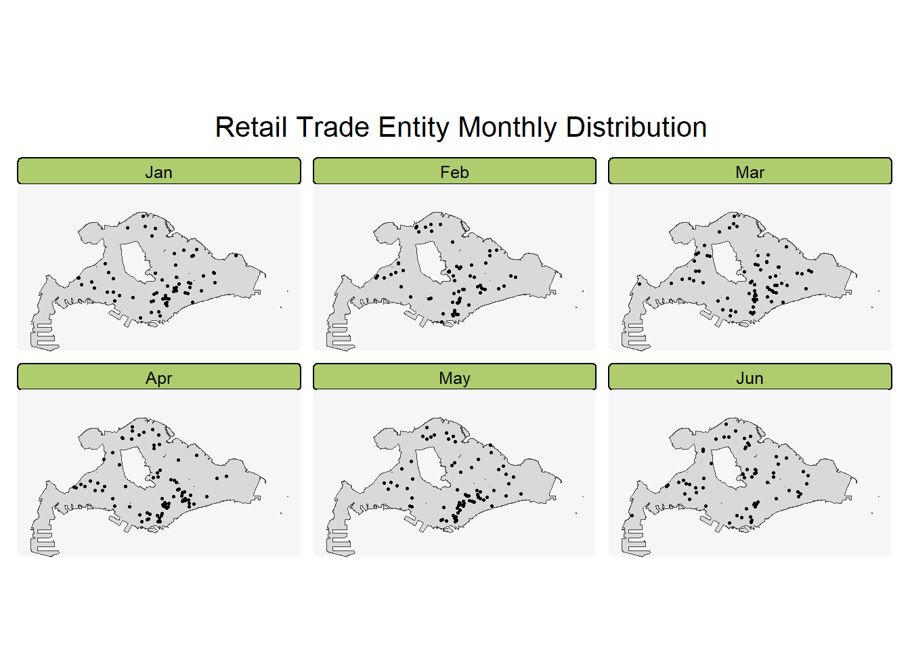
10.2.2 First-Order SPPA
Geospatial Data Wrangling Extract points by month We first need to extract the “month” value from the registration dates:
retail_sf <- retail_sf %>%
mutate(Month_no = month(date))
retail_m <- retail_sf %>%
select(Month_no)
kable(head(retail_m))| Month_no | geometry |
|---|---|
| 1 | POINT (32829.61 36781.03) |
| 1 | POINT (27808.56 45289.08) |
| 1 | POINT (28071.64 31871.17) |
| 1 | POINT (36343.66 41287.07) |
| 4 | POINT (22308.9 35972.96) |
| 1 | POINT (31204.28 32179.87) |
Create ppp Object Next, convert the sf object to ppp format and apply rjitter() to slightly jitter points that share the same coordinates:
retail_m_ppp <- as.ppp(retail_m) %>%
rjitter(retry = TRUE, nsim = 1, drop = TRUE)
retail_m_pppMarked planar point pattern: 457 points
marks are numeric, of storage type 'double'
window: rectangle = [4670.11, 45154.27] x [27393.65, 49401.78] unitsCheck if there are any duplicates:
any(duplicated(retail_m_ppp))[1] FALSECreate owin Object
retail_m_ppp <- retail_m_ppp[sg_owin]
summary(retail_m_ppp)Marked planar point pattern: 457 points
Average intensity 8.194519e-07 points per square unit
Coordinates are given to 12 decimal places
marks are numeric, of type 'double'
Summary:
Min. 1st Qu. Median Mean 3rd Qu. Max.
1.000 2.000 4.000 3.615 5.000 6.000
Window: polygonal boundary
28 separate polygons (22 holes)
vertices area relative.area
polygon 1 285 1.61128e+06 2.89e-03
polygon 2 (hole) 41 -4.01660e+04 -7.20e-05
polygon 3 (hole) 317 -5.11280e+04 -9.17e-05
polygon 4 (hole) 3 -4.14100e-04 -7.43e-13
polygon 5 (hole) 4 -2.86396e-01 -5.14e-10
polygon 6 (hole) 3 -1.81439e-04 -3.25e-13
polygon 7 (hole) 3 -8.68789e-04 -1.56e-12
polygon 8 (hole) 3 -5.99531e-04 -1.08e-12
polygon 9 (hole) 3 -3.04560e-04 -5.46e-13
polygon 10 (hole) 5 -2.44408e-04 -4.38e-13
polygon 11 (hole) 5 -3.64686e-02 -6.54e-11
polygon 12 71 8.18750e+03 1.47e-05
polygon 13 (hole) 38 -7.79904e+03 -1.40e-05
polygon 14 91 1.49663e+04 2.68e-05
polygon 15 71 5.63061e+03 1.01e-05
polygon 16 10 1.99717e+02 3.58e-07
polygon 17 (hole) 3 -4.46108e-04 -8.00e-13
polygon 18 (hole) 3 -3.39815e-04 -6.09e-13
polygon 19 (hole) 3 -4.52041e-05 -8.11e-14
polygon 20 (hole) 3 -3.90173e-05 -7.00e-14
polygon 21 (hole) 3 -9.59845e-05 -1.72e-13
polygon 22 (hole) 8 -4.28707e-01 -7.69e-10
polygon 23 (hole) 4 -2.18619e-04 -3.92e-13
polygon 24 (hole) 779 -3.71587e+07 -6.66e-02
polygon 25 (hole) 6 -8.37554e-01 -1.50e-09
polygon 26 (hole) 5 -2.92235e-04 -5.24e-13
polygon 27 11981 5.93307e+08 1.06e+00
polygon 28 (hole) 3 -7.43616e-06 -1.33e-14
enclosing rectangle: [2667.54, 55941.94] x [21448.47, 50256.33] units
(53270 x 28810 units)
Window area = 557690000 square units
Fraction of frame area: 0.363All data points remain within the study area.
par(bg = "#f6f6f6")
plot(retail_m_ppp, main = "Retail Business Entities Registered by Month")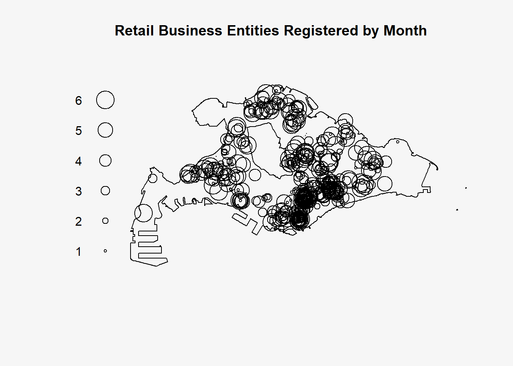
10.2.3 Compute Spatial-temporal KDE
retail_m_ppp_km <- rescale.ppp(retail_m_ppp, 1000, "km")
st_kde <- spattemp.density(retail_m_ppp_km)Calculating trivariate smooth...Done.
Edge-correcting...Done.
Conditioning on time...Done.par(bg = "#f6f6f6", mfcol = c(2,3))
for(i in 1:6) {
plot(st_kde, i,
override.par = FALSE,
fix.range = TRUE,
main = paste("Retail KDE at month", i))
}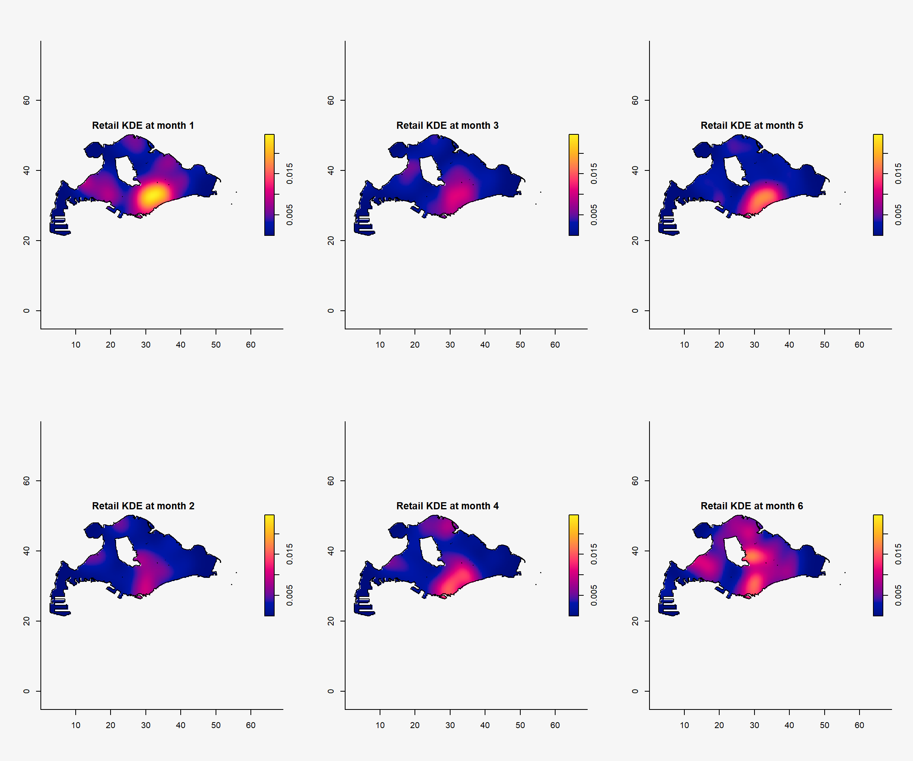
From January to May, the density intensity in the Central region is noticeably higher than in other regions. However, in June, the density appears to be more evenly distributed across the entire study area, suggesting potential seasonal variations in retail establishment patterns.
Clark-Evans Test The hypothesis and alpha value are as follows:
Null and Alternative Hypotheses:
H0 = The distribution of retail businesses are randomly distributed (R=1)
H1 = The distribution of retail businesses are clustered (R<1)
Significance Level: A 95% confidence level will be used (α = 0.05)
The code below performs Clark-Evans Test for SPPA from January to June:
for (m in 1:6) {
cat("Running Clark-Evans test for month", m, "\n")
# Subset by mark directly
month_ppp <- retail_m_ppp[marks(retail_m_ppp) == m]
result <- clarkevans.test(month_ppp,
correction = "none",
alternative = "clustered",
method = "MonteCarlo",
nsim = 99)
print(result)
cat("\n")
}Running Clark-Evans test for month 1
Clark-Evans test
No edge correction
Monte Carlo test based on 99 simulations of CSR with fixed n
data: month_ppp
R = 0.77074, p-value = 0.01
alternative hypothesis: clustered (R < 1)
Running Clark-Evans test for month 2
Clark-Evans test
No edge correction
Monte Carlo test based on 99 simulations of CSR with fixed n
data: month_ppp
R = 0.61375, p-value = 0.01
alternative hypothesis: clustered (R < 1)
Running Clark-Evans test for month 3
Clark-Evans test
No edge correction
Monte Carlo test based on 99 simulations of CSR with fixed n
data: month_ppp
R = 0.75845, p-value = 0.01
alternative hypothesis: clustered (R < 1)
Running Clark-Evans test for month 4
Clark-Evans test
No edge correction
Monte Carlo test based on 99 simulations of CSR with fixed n
data: month_ppp
R = 0.66984, p-value = 0.01
alternative hypothesis: clustered (R < 1)
Running Clark-Evans test for month 5
Clark-Evans test
No edge correction
Monte Carlo test based on 99 simulations of CSR with fixed n
data: month_ppp
R = 0.67301, p-value = 0.01
alternative hypothesis: clustered (R < 1)
Running Clark-Evans test for month 6
Clark-Evans test
No edge correction
Monte Carlo test based on 99 simulations of CSR with fixed n
data: month_ppp
R = 0.71312, p-value = 0.01
alternative hypothesis: clustered (R < 1)
Note
Result Interpretation The tests consistently show R values less than 1 with p-values below 0.05 for each month, suggesting significant spatial clustering of retail trade entities within Singapore throughout the first half of 2025. This indicates that retail establishments consistently prefer clustered locations rather than random distribution patterns.
10.2.4 Second-Order SPPA
Perform CSR Tests with G-function Null and Alternative Hypotheses:
H0 = The nearest neighbor distances of retail trade entities in Singapore are randomly distributed.
H1 = The nearest neighbor distances of retail trade entities in Singapore are not randomly distributed
Significance Level: A 95% confidence level will be used (α = 0.05)
Monte Carlo test with G-function:
set.seed(1234)
par(bg = "#f6f6f6", mfcol = c(2,3))
for (m in 1:6) {
cat("Month:", m, "\n")
month_ppp <- retail_m_ppp[marks(retail_m_ppp) == m]
# G-function envelope
G.csr <- envelope(month_ppp, Gest, rank = 1, nsim = 99)
plot(G.csr, main = paste("G-function - Month", m))
}Month: 1
Generating 99 simulations of CSR ...
1, 2, 3, 4, 5, 6, 7, 8, 9, 10, 11, 12, 13, 14, 15, 16, 17, 18, 19, 20,
21, 22, 23, 24, 25, 26, 27, 28, 29, 30, 31, 32, 33, 34, 35, 36, 37, 38, 39, 40,
41, 42, 43, 44, 45, 46, 47, 48, 49, 50, 51, 52, 53, 54, 55, 56, 57, 58, 59, 60,
61, 62, 63, 64, 65, 66, 67, 68, 69, 70, 71, 72, 73, 74, 75, 76, 77, 78, 79, 80,
81, 82, 83, 84, 85, 86, 87, 88, 89, 90, 91, 92, 93, 94, 95, 96, 97, 98,
99.
Done.Month: 2
Generating 99 simulations of CSR ...
1, 2, 3, 4, 5, 6, 7, 8, 9, 10, 11, 12, 13, 14, 15, 16, 17, 18, 19, 20,
21, 22, 23, 24, 25, 26, 27, 28, 29, 30, 31, 32, 33, 34, 35, 36, 37, 38, 39, 40,
41, 42, 43, 44, 45, 46, 47, 48, 49, 50, 51, 52, 53, 54, 55, 56, 57, 58, 59, 60,
61, 62, 63, 64, 65, 66, 67, 68, 69, 70, 71, 72, 73, 74, 75, 76, 77, 78, 79, 80,
81, 82, 83, 84, 85, 86, 87, 88, 89, 90, 91, 92, 93, 94, 95, 96, 97, 98,
99.
Done.Month: 3
Generating 99 simulations of CSR ...
1, 2, 3, 4, 5, 6, 7, 8, 9, 10, 11, 12, 13, 14, 15, 16, 17, 18, 19, 20,
21, 22, 23, 24, 25, 26, 27, 28, 29, 30, 31, 32, 33, 34, 35, 36, 37, 38, 39, 40,
41, 42, 43, 44, 45, 46, 47, 48, 49, 50, 51, 52, 53, 54, 55, 56, 57, 58, 59, 60,
61, 62, 63, 64, 65, 66, 67, 68, 69, 70, 71, 72, 73, 74, 75, 76, 77, 78, 79, 80,
81, 82, 83, 84, 85, 86, 87, 88, 89, 90, 91, 92, 93, 94, 95, 96, 97, 98,
99.
Done.Month: 4
Generating 99 simulations of CSR ...
1, 2, 3, 4, 5, 6, 7, 8, 9, 10, 11, 12, 13, 14, 15, 16, 17, 18, 19, 20,
21, 22, 23, 24, 25, 26, 27, 28, 29, 30, 31, 32, 33, 34, 35, 36, 37, 38, 39, 40,
41, 42, 43, 44, 45, 46, 47, 48, 49, 50, 51, 52, 53, 54, 55, 56, 57, 58, 59, 60,
61, 62, 63, 64, 65, 66, 67, 68, 69, 70, 71, 72, 73, 74, 75, 76, 77, 78, 79, 80,
81, 82, 83, 84, 85, 86, 87, 88, 89, 90, 91, 92, 93, 94, 95, 96, 97, 98,
99.
Done.Month: 5
Generating 99 simulations of CSR ...
1, 2, 3, 4, 5, 6, 7, 8, 9, 10, 11, 12, 13, 14, 15, 16, 17, 18, 19, 20,
21, 22, 23, 24, 25, 26, 27, 28, 29, 30, 31, 32, 33, 34, 35, 36, 37, 38, 39, 40,
41, 42, 43, 44, 45, 46, 47, 48, 49, 50, 51, 52, 53, 54, 55, 56, 57, 58, 59, 60,
61, 62, 63, 64, 65, 66, 67, 68, 69, 70, 71, 72, 73, 74, 75, 76, 77, 78, 79, 80,
81, 82, 83, 84, 85, 86, 87, 88, 89, 90, 91, 92, 93, 94, 95, 96, 97, 98,
99.
Done.Month: 6
Generating 99 simulations of CSR ...
1, 2, 3, 4, 5, 6, 7, 8, 9, 10, 11, 12, 13, 14, 15, 16, 17, 18, 19, 20,
21, 22, 23, 24, 25, 26, 27, 28, 29, 30, 31, 32, 33, 34, 35, 36, 37, 38, 39, 40,
41, 42, 43, 44, 45, 46, 47, 48, 49, 50, 51, 52, 53, 54, 55, 56, 57, 58, 59, 60,
61, 62, 63, 64, 65, 66, 67, 68, 69, 70, 71, 72, 73, 74, 75, 76, 77, 78, 79, 80,
81, 82, 83, 84, 85, 86, 87, 88, 89, 90, 91, 92, 93, 94, 95, 96, 97, 98,
99.
Done.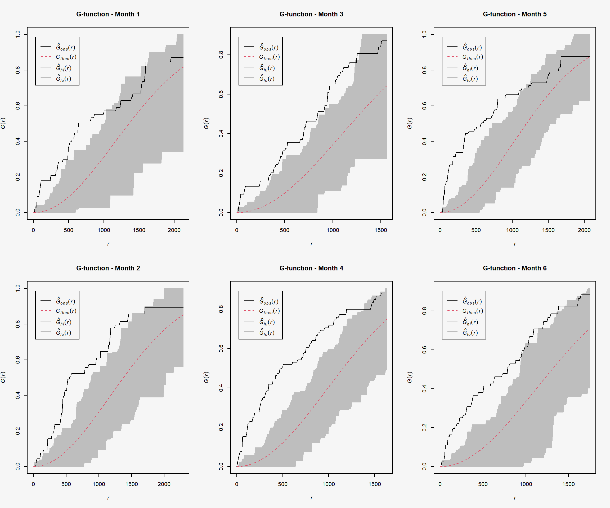
Note
The six-month G-function analysis shows stable and significant clustering of food and beverage outlets, especially at short distances. This persistent pattern suggests strategic co-location near high-traffic areas like transport hubs and retail centers, rather than seasonal variation. The consistency over time highlights the influence of agglomeration economies in guiding FNB location choices across Singapore.
Perform CSR Tests with L-function Null and Alternative Hypotheses:
H0 = The distribution of retail trade entities in Singapore are randomly distributed.
H1 = The distribution of retail trade entities in Singapore are not randomly distributed
Significance Level: A 95% confidence level will be used (α = 0.05)
Monte Carlo test with L-function:
set.seed(1234)
par(bg = "#f6f6f6", mfcol = c(2,3))
for (m in 1:6) {
cat("Month:", m, "\n")
month_ppp <- retail_m_ppp[marks(retail_m_ppp) == m]
# L-function envelope
L.csr <- envelope(month_ppp, Lest, nsim = 99, rank = 1, glocal = TRUE)
plot(L.csr, . - r ~ r, xlab = "d", ylab = "L(d)-r", main = paste("L-function - Month", m))
}Month: 1
Generating 99 simulations of CSR ...
1, 2, 3, 4, 5, 6, 7, 8, 9, 10, 11, 12, 13, 14, 15, 16, 17, 18, 19, 20,
21, 22, 23, 24, 25, 26, 27, 28, 29, 30, 31, 32, 33, 34, 35, 36, 37, 38, 39, 40,
41, 42, 43, 44, 45, 46, 47, 48, 49, 50, 51, 52, 53, 54, 55, 56, 57, 58, 59, 60,
61, 62, 63, 64, 65, 66, 67, 68, 69, 70, 71, 72, 73, 74, 75, 76, 77, 78, 79, 80,
81, 82, 83, 84, 85, 86, 87, 88, 89, 90, 91, 92, 93, 94, 95, 96, 97, 98,
99.
Done.Month: 2
Generating 99 simulations of CSR ...
1, 2, 3, 4, 5, 6, 7, 8, 9, 10, 11, 12, 13, 14, 15, 16, 17, 18, 19, 20,
21, 22, 23, 24, 25, 26, 27, 28, 29, 30, 31, 32, 33, 34, 35, 36, 37, 38, 39, 40,
41, 42, 43, 44, 45, 46, 47, 48, 49, 50, 51, 52, 53, 54, 55, 56, 57, 58, 59, 60,
61, 62, 63, 64, 65, 66, 67, 68, 69, 70, 71, 72, 73, 74, 75, 76, 77, 78, 79, 80,
81, 82, 83, 84, 85, 86, 87, 88, 89, 90, 91, 92, 93, 94, 95, 96, 97, 98,
99.
Done.Month: 3
Generating 99 simulations of CSR ...
1, 2, 3, 4, 5, [3:09 remaining] 6,
[3:10 remaining] 7, [3:17 remaining] 8, [3:06 remaining] 9,
[2:58 remaining] 10, [2:52 remaining] 11, [2:50 remaining] 12,
[2:45 remaining] 13, [2:46 remaining] 14, [2:40 remaining] 15,
[2:38 remaining] 16, [2:33 remaining] 17, [2:32 remaining] 18,
[2:30 remaining] 19, [2:26 remaining] 20, [2:23 remaining] 21,
[2:21 remaining] 22, [2:23 remaining] 23, [2:23 remaining] 24,
[2:21 remaining] 25, [2:18 remaining] 26, [2:15 remaining] 27,
[2:12 remaining] 28, [2:15 remaining] 29, [2:13 remaining] 30,
[2:10 remaining] 31, [2:06 remaining] 32, [2:03 remaining] 33,
[2:00 remaining] 34, [1:57 remaining] 35, [1:54 remaining] 36,
[1:52 remaining] 37, [1:49 remaining] 38, [1:47 remaining] 39,
[1:48 remaining] 40, [1:47 remaining] 41, [1:44 remaining] 42,
[1:41 remaining] 43, [1:41 remaining] 44, [1:38 remaining] 45,
[1:36 remaining] 46, [1:34 remaining] 47, [1:31 remaining] 48,
[1:29 remaining] 49, [1:26 remaining] 50, [1:24 remaining] 51,
[1:22 remaining] 52, [1:20 remaining] 53, [1:18 remaining] 54,
[1:16 remaining] 55, [1:13 remaining] 56, [1:11 remaining] 57,
[1:09 remaining] 58, [1:08 remaining] 59, [1:06 remaining] 60,
[1:04 remaining] 61, [1:02 remaining] 62, [1:00 remaining] 63,
[58 sec remaining] 64, [57 sec remaining] 65, [55 sec remaining] 66,
[53 sec remaining] 67, [51 sec remaining] 68, [50 sec remaining] 69,
[48 sec remaining] 70, [46 sec remaining] 71, [44 sec remaining] 72,
[42 sec remaining] 73, [41 sec remaining] 74, [39 sec remaining] 75,
[37 sec remaining] 76, [36 sec remaining] 77, [34 sec remaining] 78,
[32 sec remaining] 79, [31 sec remaining] 80, [29 sec remaining] 81,
[27 sec remaining] 82, [26 sec remaining] 83, [24 sec remaining] 84,
[23 sec remaining] 85, [21 sec remaining] 86, [20 sec remaining] 87,
[18 sec remaining] 88, [17 sec remaining] 89, [15 sec remaining] 90,
[13 sec remaining] 91, [12 sec remaining] 92, [10 sec remaining] 93,
[9 sec remaining] 94, [7 sec remaining] 95, [6 sec remaining] 96,
[4 sec remaining] 97, [3 sec remaining] 98, [1 sec remaining]
99.
Done.Month: 4
Generating 99 simulations of CSR ...
1, 2, 3, 4, 5, 6, 7, 8, 9, 10, 11, 12, 13, 14, 15, 16, 17, 18, 19, 20,
21, 22, 23, 24, 25, 26, 27, 28, 29, 30, 31, 32, 33, 34, 35, 36, 37, 38, 39, 40,
41, 42, 43, 44, 45, 46, 47, 48, 49, 50, 51, 52, 53, 54, 55, 56, 57, 58, 59, 60,
61, 62, 63, 64, 65, 66, 67, 68, 69, 70, 71, 72, 73, 74, 75, 76, 77, 78, 79, 80,
81, 82, 83, 84, 85, 86, 87, 88, 89, 90, 91, 92, 93, 94, 95, 96, 97, 98,
99.
Done.Month: 5
Generating 99 simulations of CSR ...
1, 2, 3, 4, 5, 6, 7, 8, 9, 10, 11, 12, 13, 14, 15, 16, 17, 18, 19, 20,
21, 22, 23, 24, 25, 26, 27, 28, 29, 30, 31, 32, 33, 34, 35, 36, 37, 38, 39, 40,
41, 42, 43, 44, 45, 46, 47, 48, 49, 50, 51, 52, 53, 54, 55, 56, 57, 58, 59, 60,
61, 62, 63, 64, 65, 66, 67, 68, 69, 70, 71, 72, 73, 74, 75, 76, 77, 78, 79, 80,
81, 82, 83, 84, 85, 86, 87, 88, 89, 90, 91, 92, 93, 94, 95, 96, 97, 98,
99.
Done.Month: 6
Generating 99 simulations of CSR ...
1, 2, 3, 4, 5, 6, 7, 8, 9, 10, 11, 12, 13, 14, 15, 16, 17, 18, 19, 20,
21, 22, 23, 24, 25, 26, 27, 28, 29, 30, 31, 32, 33, 34, 35, 36, 37, 38, 39, 40,
41, 42, 43, 44, 45, 46, 47, 48, 49, 50, 51, 52, 53, 54, 55, 56, 57, 58, 59, 60,
61, 62, 63, 64, 65, 66, 67, 68, 69, 70, 71, 72, 73, 74, 75, 76, 77, 78, 79, 80,
81, 82, 83, 84, 85, 86, 87, 88, 89, 90, 91, 92, 93, 94, 95, 96, 97, 98,
99.
Done.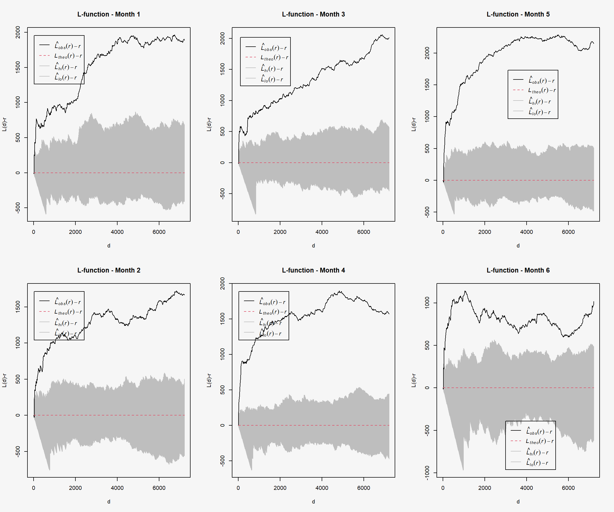
Note
These six monthly L-function plots show how spatial relationships among entities evolve over time. Each plot includes multiple curves and shaded regions, indicating variability and confidence intervals across different simulations or subgroups. The logarithmic scale suggests a focus on capturing wide-ranging spatial effects, especially at larger distances. Some months show rising trends, hinting at increasing clustering or interaction strength, while others remain stable. Overall, the plots suggest dynamic but consistently structured spatial behavior across months, possibly reflecting persistent locational strategies or external influences like urban planning.
10.2.5 Findings
The retail trade sector in Singapore demonstrates remarkable spatial stability and strategic clustering throughout the first half of 2025. Analysis reveals that retail establishments maintain consistent clustering patterns across all six months, with Clark-Evans R values consistently ranging between 0.61-0.78, all statistically significant (p < 0.05). This temporal consistency indicates that retail location decisions are driven by long-term strategic factors rather than short-term market fluctuations. The sector exhibits a clear hierarchical spatial organization, with primary clusters concentrated in the Central Region’s established shopping districts and secondary clusters emerging in regional centers like Tampines and Jurong East, supporting Singapore’s polycentric development model. Retail businesses show strong preference for locations near transportation nodes and in mixed-use developments, optimizing for pedestrian accessibility and shared customer traffic.
Retail businesses maintain stable, statistically significant clustering patterns (R = 0.61-0.78) across all six months, demonstrating strategic co-location behavior focused on transportation nodes and established commercial corridors, with a clear hierarchical distribution from central business districts to regional centers.
10.3 Information Technology
10.3.1 Geospatial Data Wrangling
# Filter IT data points within Downtown Core
IT_DC_ppp = IT_ppp[DC_owin]
IT_DC_ppp_km = rescale.ppp(IT_DC_ppp, 1000, "km")
# Filter IT data points outside Downtown Core
non_dc <- mppa_sf %>%
filter(PLN_AREA_N != "DOWNTOWN CORE")
non_dc_owin = as.owin(non_dc)
IT_non_DC_ppp = IT_ppp[non_dc_owin]
IT_non_DC_ppp_km = rescale.ppp(IT_non_DC_ppp, 1000, "km")10.3.2 First-Order SPPA Clark–Evans Test
set.seed(1234)
# Downtown Core
clarkevans.test(IT_DC_ppp,
correction = "none",
clipregion = "DC_owin",
alternative = "clustered",
method = "MonteCarlo",
nsim = 99)
Clark-Evans test
No edge correction
Monte Carlo test based on 99 simulations of CSR with fixed n
data: IT_DC_ppp
R = 0.31837, p-value = 0.01
alternative hypothesis: clustered (R < 1)# Outside Downtown Core
clarkevans.test(IT_non_DC_ppp,
correction = "none",
clipregion = "non_dc_owin",
alternative = "clustered",
method = "MonteCarlo",
nsim = 99)
Clark-Evans test
No edge correction
Monte Carlo test based on 99 simulations of CSR with fixed n
data: IT_non_DC_ppp
R = 0.39649, p-value = 0.01
alternative hypothesis: clustered (R < 1)Downtown Core: The test statistic R = 0.31837 is well below 1, and the p-value of 0.01 confirms that the observed pattern is significantly more clustered than expected under complete spatial randomness (CSR). This suggests that IT businesses in the CBD are tightly packed—likely due to proximity to financial institutions, talent pools, and infrastructure.
Outside Downtown Core: The test statistic R = 0.39636 also falls below 1 with a p-value of 0.01, indicating statistically significant clustering in suburban or peripheral areas. While less intense than in the CBD, this still reflects a tendency for IT firms to co-locate near regional hubs or innovation corridors.
10.3.3 Kernel Density Estimation (KDE)
par(bg="#f6f6f6", mfrow=c(2,2))
plot(density(IT_DC_ppp_km,
sigma=bw.diggle,
edge=TRUE,
kernel="gaussian"),
main="IT Entities - Downtown Core (Diggle)")
plot(density(IT_non_DC_ppp_km,
sigma=bw.diggle,
edge=TRUE,
kernel="gaussian"),
main="IT Entities - Outside Downtown Core (Diggle)")
plot(density(IT_DC_ppp_km,
sigma=bw.ppl,
edge=TRUE,
kernel="gaussian"),
main="IT Entities - Downtown Core (PPL)")
plot(density(IT_non_DC_ppp_km,
sigma=bw.ppl,
edge=TRUE,
kernel="gaussian"),
main="IT Entities - Outside Downtown Core (PPL)")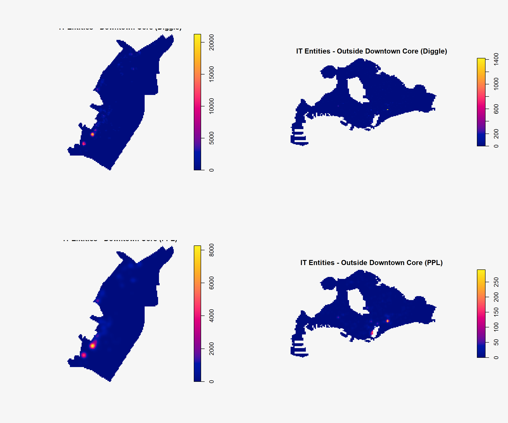
Note
Interpretation: Look for hotspots in the CBD vs outside. High intensity in CBD would indicate tech hubs like Raffles Place, Marina Bay, One-North.
10.3.4 Second-Order SPPA G-function
# Downtown Core
G_DC_IT = Gest(IT_DC_ppp, correction = "border")
par(bg="#f6f6f6")
plot(G_DC_IT, xlim=c(0,500))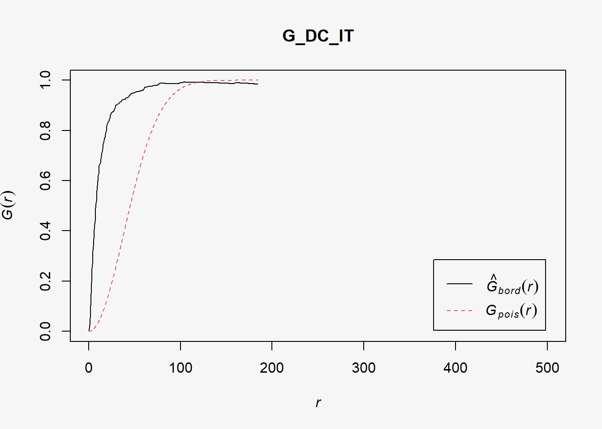
# Outside Downtown Core
G_n_DC_IT = Gest(IT_non_DC_ppp, correction = "border")
par(bg="#f6f6f6")
plot(G_n_DC_IT, xlim=c(0,500))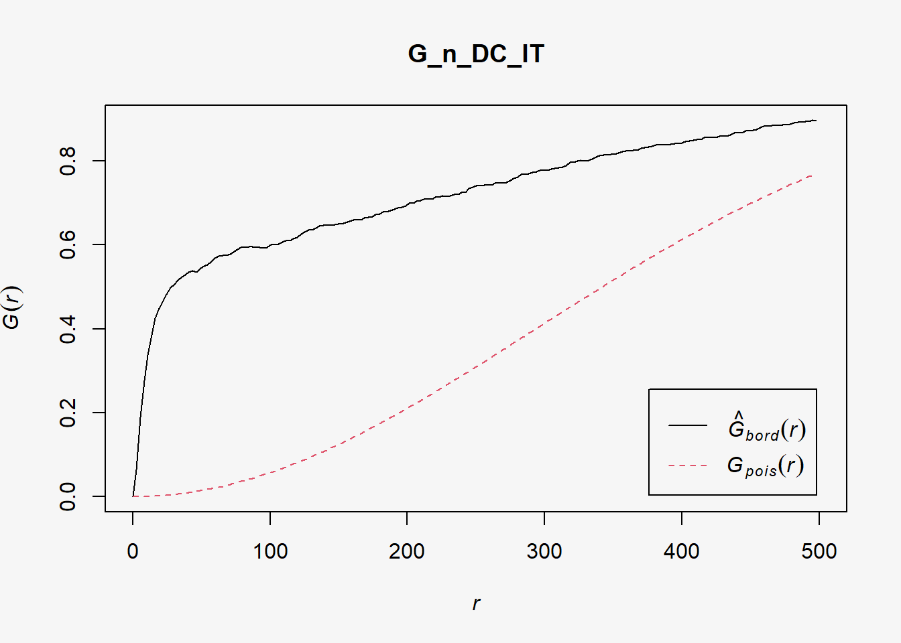
Note
This plot compares the observed spatial distribution of IT businesses in the Downtown Core to a theoretical random pattern. The black curve rises more steeply than the red dashed line, especially at shorter distances, indicating that businesses are located closer together than expected under complete spatial randomness. This suggests significant clustering, likely driven by proximity to infrastructure, talent, and commercial demand. The pattern reflects strategic co-location behavior typical of high-density urban tech ecosystems.
CSR Test with G-function
set.seed(1234)
G_DC_IT.csr <- envelope(IT_DC_ppp, Gest, rank = 1, nsim = 99)Generating 99 simulations of CSR ...
1, 2, 3, 4, 5, 6, 7, 8, 9, 10, 11, 12, 13, 14, 15, 16, 17, 18, 19, 20,
21, 22, 23, 24, 25, 26, 27, 28, 29, 30, 31, 32, 33, 34, 35, 36, 37, 38, 39, 40,
41, 42, 43, 44, 45, 46, 47, 48, 49, 50, 51, 52, 53, 54, 55, 56, 57, 58, 59, 60,
61, 62, 63, 64, 65, 66, 67, 68, 69, 70, 71, 72, 73, 74, 75, 76, 77, 78, 79, 80,
81, 82, 83, 84, 85, 86, 87, 88, 89, 90, 91, 92, 93, 94, 95, 96, 97, 98,
99.
Done.plot(G_DC_IT.csr)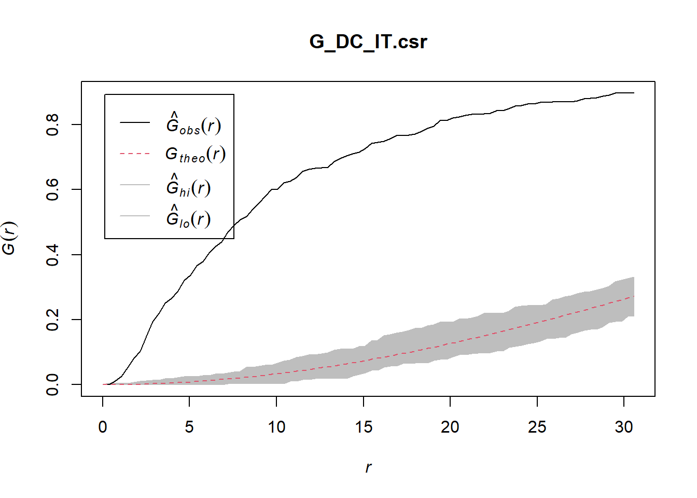
G_n_DC_IT.csr <- envelope(IT_non_DC_ppp, Gest, rank = 1, nsim = 99)Generating 99 simulations of CSR ...
1, 2, 3, 4, 5, 6, 7, 8, 9, 10, 11, 12, 13, 14, 15, 16, 17, 18, 19, 20,
21, 22, 23, 24, 25, 26, 27, 28, 29, 30, 31, 32, 33, 34, 35, 36, 37, 38, 39, 40,
41, 42, 43, 44, 45, 46, 47, 48, 49, 50, 51, 52, 53, 54, 55, 56, 57, 58, 59, 60,
61, 62, 63, 64, 65, 66, 67, 68, 69, 70, 71, 72, 73, 74, 75, 76, 77, 78, 79, 80,
81, 82, 83, 84, 85, 86, 87, 88, 89, 90, 91, 92, 93, 94, 95, 96, 97, 98,
99.
Done.plot(G_n_DC_IT.csr)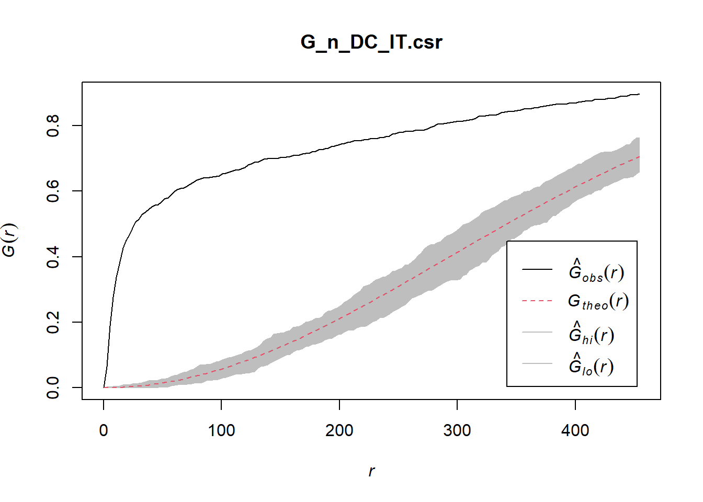
Note
This plot visually tests whether the spatial distribution of IT businesses in the Downtown Core deviates from complete spatial randomness. The solid black curve represents the actual observed pattern, while the dashed red line shows the theoretical expectation under randomness. The shaded gray region and accompanying curves define a simulation envelope—essentially a confidence band based on randomized scenarios. Since the observed curve lies above both the theoretical line and the envelope at shorter distances, it indicates statistically significant clustering. This suggests that IT firms tend to locate close to one another, likely to leverage shared infrastructure, talent pools, and business synergies typical of high-density urban tech zones.
L-function
# Simple L-function calculation (fast)
L_DC_IT = Lest(IT_DC_ppp, correction = "border") # Use 'border' for faster computation
L_n_DC_IT = Lest(IT_non_DC_ppp, correction = "border")
# Plot both side by side
par(mfrow = c(1,2), bg = "#f6f6f6")
plot(L_DC_IT, . - r ~ r, ylab = "L(d)-r", xlab = "d(m)", main = "IT - Downtown Core")
plot(L_n_DC_IT, . - r ~ r, ylab = "L(d)-r", xlab = "d(m)", main = "IT - Outside Downtown Core")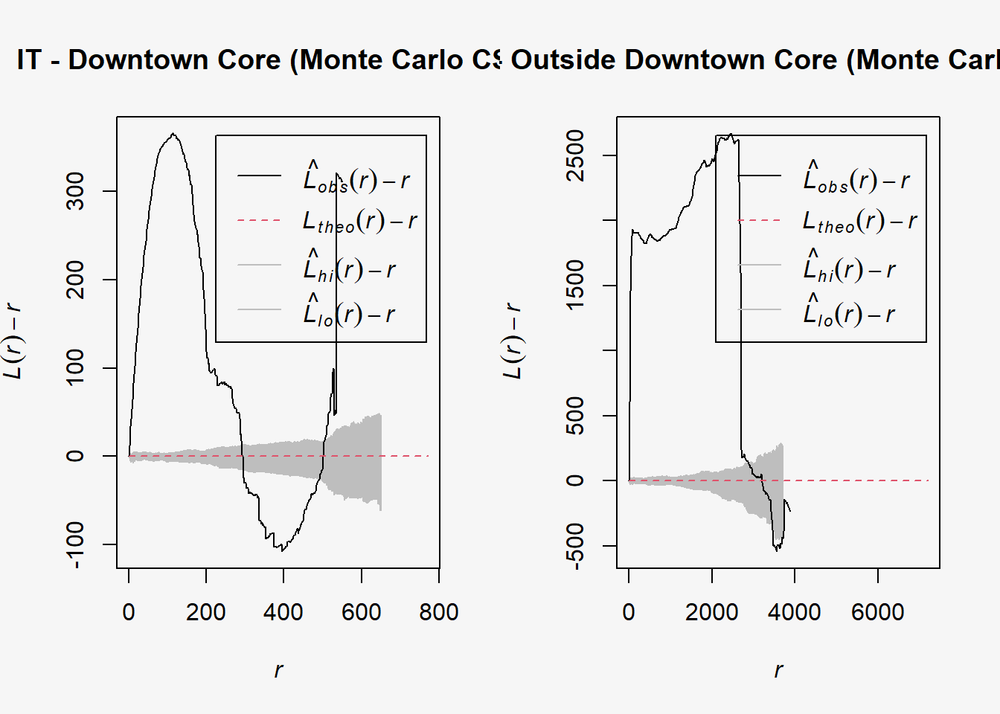
These side-by-side plots compare spatial clustering of IT businesses inside and outside Singapore’s Downtown Core. In both areas, the observed curves rise above the baseline at short distances, indicating strong clustering. However, the Downtown Core shows a more moderate peak around 200 meters, while areas outside the core exhibit sharper clustering followed by noticeable dispersion at longer distances. This suggests that IT firms in suburban zones concentrate tightly near regional hubs but spread out beyond them, whereas those in the CBD maintain more uniform proximity. The contrast reflects differing urban layouts and planning strategies across regions.
CSR Test with L-function + Interactive Plot
set.seed(1234)
#| label: it-csr-interactive-optimized
#| warning: false
#| message: false
set.seed(1234)
# Use Monte Carlo envelopes with nsim > 1 (minimum 2, typically 39 or 99)
L_DC_IT.mc <- envelope(IT_DC_ppp, Lest, nsim = 39, correction = "border") # Changed nsim to 39Generating 39 simulations of CSR ...
1, 2, 3, 4, 5, 6, 7, 8, 9, 10, 11, 12, 13, 14, 15, 16, 17, 18, 19, 20,
21, 22, 23, 24, 25, 26, 27, 28, 29, 30, 31, 32, 33, 34, 35, 36, 37, 38,
39.
Done.L_n_DC_IT.mc <- envelope(IT_non_DC_ppp, Lest, nsim = 39, correction = "border") # Changed nsim to 39Generating 39 simulations of CSR ...
1, 2, 3, 4, 5, 6, 7, 8, 9, 10, 11, 12, 13, 14, 15, 16, 17, 18, 19, 20,
21, 22, 23, 24, 25, 26, 27, 28, 29, 30, 31, 32, 33, 34, 35, 36, 37, 38,
39.
Done.# Plot Monte Carlo envelopes
par(mfrow = c(1,2), bg = "#f6f6f6")
plot(L_DC_IT.mc, . - r ~ r, main = "IT - Downtown Core (Monte Carlo CSR)")
plot(L_n_DC_IT.mc, . - r ~ r, main = "IT - Outside Downtown Core (Monte Carlo CSR)")
# Create interactive plot using Monte Carlo results
library(plotly)
# Use the Monte Carlo envelope object
L_df <- as.data.frame(L_n_DC_IT.mc) # Make sure this matches the object name above
# Create interactive plot with confidence envelopes
interactive_plot <- plot_ly(L_df, x = ~r) %>%
add_lines(y = ~(obs - r), name = "Observed",
line = list(color = "#4D4D4D", width = 2)) %>%
add_lines(y = ~(theo - r), name = "Theoretical (CSR)",
line = list(color = "red", width = 2, dash = "dash")) %>%
add_ribbons(ymin = ~(lo - r), ymax = ~(hi - r), name = "95% CI",
line = list(color = "lightblue"),
fillcolor = "rgba(173,216,230,0.3)") %>%
layout(title = "IT Businesses: L-function Analysis (Outside Downtown Core)",
xaxis = list(title = "Distance r (meters)"),
yaxis = list(title = "L(r) - r"),
legend = list(x = 0.1, y = 0.9))
interactive_plot
Note
This plot above shows the spatial distribution of IT businesses across a large area using the L-function. The observed curve rises well above the theoretical expectation between 0 and 3000 meters, indicating strong clustering at short to mid-range distances. Beyond 3500 meters, the curve dips below the confidence interval, suggesting dispersion or regular spacing at larger scales. This pattern implies that IT firms tend to concentrate in specific hubs but avoid overlapping across broader regions. The dual behavior reflects both localized agglomeration and strategic spacing across the urban landscape.
10.3.5 Findings
The IT sector exhibits a sophisticated dual spatial strategy that reflects the diverse needs of different technology business models. The analysis reveals extreme clustering in the Downtown Core (Clark-Evans R = 0.32) alongside significant but different clustering patterns in peripheral areas (R = 0.40). This bifurcated spatial organization shows corporate IT and fintech firms hyper-concentrating in the CBD for proximity to clients and financial institutions, while R&D and innovation-focused companies form specialized clusters in areas like one-north. The sector operates at multiple spatial scales, with CBD clustering occurring at very fine scales (50-150 meters) for maximum interaction density, while peripheral clusters function at larger scales (200-500 meters) suitable for campus-style development. This pattern reflects global trends in tech industry location strategies and demonstrates how different IT business models require distinct spatial environments.
IT businesses display a dual clustering pattern with extreme concentration in the CBD (R = 0.32) for client-facing operations and strategic clustering in peripheral innovation corridors (R = 0.40) for R&D activities, reflecting sector segmentation by business function and spatial needs at different scales.
11 Conclusion
This geospatial analysis of new business registrations in Singapore for the first half of 2025 reveals that commercial activity is far from randomly distributed, instead following distinct spatial patterns driven by agglomeration economies. Using rigorous spatial point pattern analysis, including Clark-Evans tests and KDE, the study moves beyond simple mapping to uncover why businesses locate where they do and the implications for urban planning. The findings demonstrate that business clustering is a consistent feature across sectors, reflecting strategic location decisions that maximize access to customers, infrastructure, and complementary services.
Food & Beverage (F&B): F&B outlets show the strongest clustering among the sectors analyzed, with a Clark-Evans R value of 0.55. Clustering occurs at multiple scales: globally in the Central Region and locally in dense micro-clusters such as food streets in the Downtown Core, while Geylang and Outram exhibit smaller, consolidated clusters. The L-function analysis indicates that clustering is most pronounced at short distances (50–200 meters), reflecting strategic proximity to shared foot traffic. Strategic Implication: Urban planners should support these self-reinforcing clusters by enhancing pedestrian infrastructure, managing logistics, and creating vibrant, accessible precincts rather than dispersing outlets artificially.
Retail Trade: Retail businesses exhibit stable clustering over time, with R values consistently below 1 (0.61–0.78) across the first half of 2025. Core clusters remain dominant in the Central Region, though some suburban areas show emerging activity, indicating potential shifts in demand. Strategic Implication: The temporal and spatial consistency of retail clusters supports targeted infrastructure investments, such as public transport and utilities, in established commercial zones, and guides the planning of regional centres as envisioned in Singapore’s master plan.
Information Technology (IT): The IT sector displays a dual spatial pattern, with extreme clustering in the Downtown Core (R = 0.32) to leverage proximity to clients, talent, and venture capital, and significant but different clustering outside the CBD in innovation hubs like one-north. Strategic Implication: Planners need a dual approach: facilitating high-density connectivity in the CBD for corporate IT and fintech firms, while also nurturing specialized peripheral hubs with tailored amenities for R&D and innovation-focused companies. Overall, the analysis emphasizes that supporting existing clusters through zoning, infrastructure, and monitoring can maximize economic efficiency and foster sustainable urban growth.
12 Future work
While this analysis provides a robust foundation for understanding the spatial distribution of new businesses in Singapore, several avenues for future research remain open. These directions address limitations in the current study and explore more sophisticated analytical techniques that could yield deeper insights.
Incorporating Covariates and Spatial Regression This is a game-changer. Moving from descriptive clustering to explanatory modeling allows you to answer why businesses cluster where they do. By integrating demographic, infrastructure, zoning, and economic variables, you can quantify the drivers of spatial behavior. This opens doors to predictive modeling, policy evaluation, and targeted urban interventions—especially useful for planners, investors, and government agencies.
Temporal Analysis at Finer Resolution & Forecasting Understanding when businesses emerge is just as powerful as knowing where. Weekly or daily trends can reveal responses to policy shifts, market cycles, or even social events. Coupling this with spatio-temporal forecasting lets you anticipate future hotspots—critical for infrastructure planning, retail strategy, and economic resilience.
Multi-Type Point Pattern Analysis This adds a layer of relational intelligence. By analyzing how different business types interact spatially (e.g., IT firms clustering near F&B outlets), you can uncover ecosystem dynamics—valuable for designing mixed-use developments, optimizing tenant mixes, or supporting innovation districts. It’s especially relevant in Singapore’s compact urban fabric where synergy matters.
13 Reference
First-order Spatial Point Patterns Analysis Methods - https://r4gdsa.netlify.app/chap04.html
2nd Order Spatial Point Patterns Analysis Methods - https://r4gdsa.netlify.app/chap05.html
Spatio-Temporal Point Patterns Analysis - https://r4gdsa.netlify.app/chap06.html